The complete product documentation — every screen, rule and safeguard, written for the people who use it.
How the site works and who it is for.
IsHaunted.com connects people who have experienced something unexplained at a property with paranormal investigation groups who can look into it.
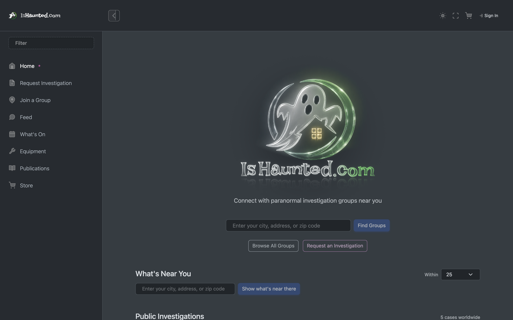
The home page: search for groups near you, and browse the cases groups have published.A client describes what has been happening and asks one or more groups to take a look. A group that accepts opens a case. From there, the client and the investigators share a timeline of what happened and what was found, and the group schedules investigations — visits to the property.
Nothing about a case is public unless the group publishes it, and even then the client's name is replaced by whatever name they chose.
| You are | You can |
|---|---|
| A visitor | Browse groups and any cases that have been published. |
| A client | Ask groups to investigate, log what happens, and follow the case. |
| A group member | Work cases, record findings, attend investigations. |
| A group owner or administrator | Configure the group, manage members, accept or decline requests. |
Anyone with an account can vote on a published case, and on individual pieces of evidence within it. There are three answers: confirms, inconclusive, and disputes. You get one vote, and changing your mind replaces it rather than adding a second.
Alongside the three counts you will see a single score. It is the votes added up, with confirms counting +1, disputes −1, and inconclusive 0 — so a green +4 means the people who looked lean towards something being there, and a red −3 means they lean the other way.
An inconclusive vote is not a wasted one. It counts towards how many people looked while moving the score nowhere, which is exactly what "I've seen it and I genuinely can't say" should do.
The score is always shown with the number of votes behind it, because +4 from five people and +4 from ninety are not the same claim. A score of 0 can mean the case is evenly split or that everyone was undecided — the counts beside it tell you which.
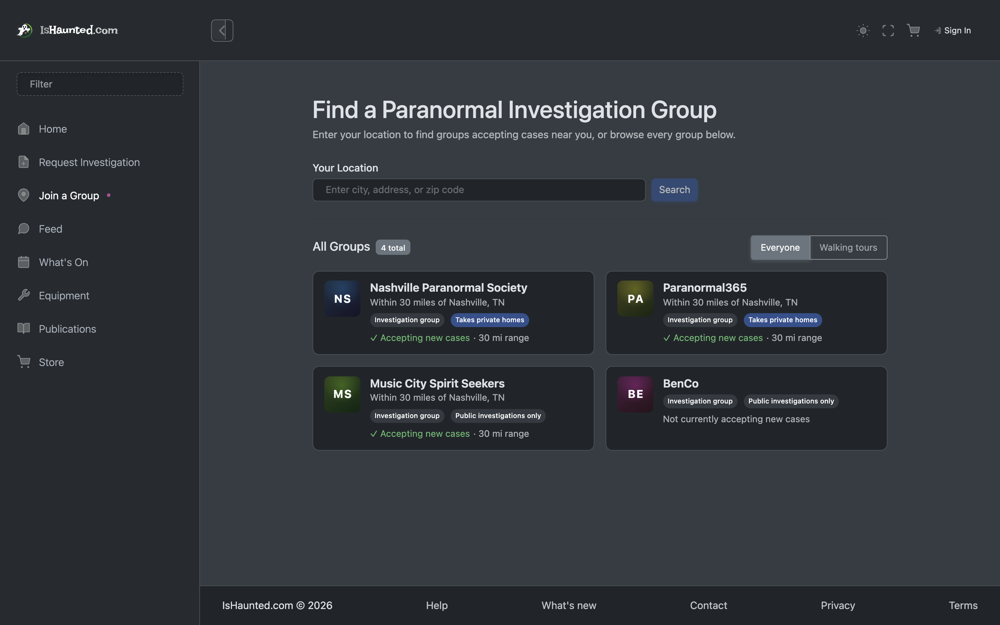
Browse Groups lists every group, closest first once you have given it a place to measure from.The home page shows what's happening close to you — groups that serve your area, and public events you could attend. If your browser allows it, this uses your current location automatically; if not, type a city, address, or zip code instead. Either way, choose how far to look with the distance dropdown.
Once you belong to a group, your Home becomes your desk: the next investigation you are on, the open cases in your groups (yours first), how many messages and requests are waiting, and any gear checked out to you with its due date. Each tile opens exactly what it counts. A group that has not written its own public page yet gets one built from what it has already told us — what kind of group it is, the area it serves, how many members, its public cases, whether it is taking new cases, and its next public event.
Groups and events are shown differently on purpose. A group that has opted in to being found is shown exactly where it is — that is the whole point of being listed. An event's location is only ever approximate, because it is an invitation rather than a business address, and the exact place is not shown until you are actually attending.
Everything you can reach is in the menu down the left. It only ever lists what applies to you, so it grows once you sign in and grows again if you run a group.
Signed out it is a short list. Signed in, most of it is grouped by subject, so the menu stays about eight rows however much you can reach:
A few things worth knowing:
Along the top right are the display controls: a sun or moon switches between light and dark, and the arrows expand the page to fill the screen. Both are remembered on this device.
Accounts are free, and the address you sign in with is never shown publicly.
You do not need one first to ask for help. The investigation request form opens to everybody: fill it in, and the last step asks your name, email and a password so the group has somewhere to write back. The account is made from the request itself — see Requesting an Investigation. You do need an account before you can join a group.
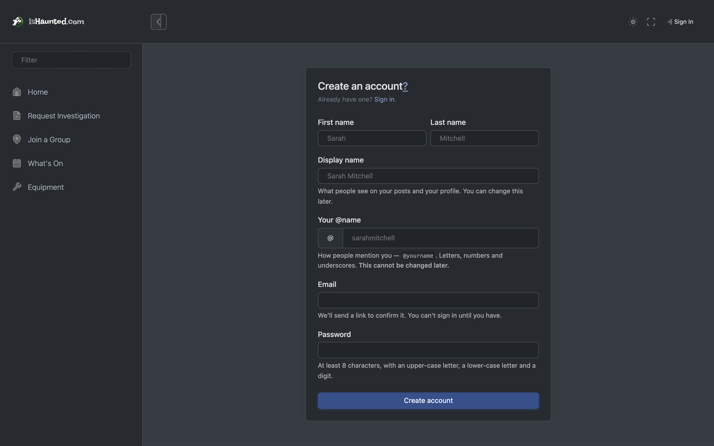
The @name is checked as you type, so you find out it is taken before you fill in the rest.To create one on its own, use the sign-in page — New here? Create an account — or go
straight to /signup. You'll be asked for four things:
| Your name | What people see on your posts and your profile. Change it whenever you like. |
| Your @name | How people mention you. Chosen once and permanent — see below. |
| Where we send the confirmation link. Never shown publicly. | |
| Password | At least 8 characters, with an upper-case letter, a lower-case letter and a digit. |
Your @name is your handle — @sarahmitchell — and it is how somebody writes to you or about
you. Letters, numbers and underscores only, and it has to be one nobody else has taken; the page
tells you as you type.
It cannot be changed afterwards. That is deliberate: your @name ends up written inside other people's posts, and letting it move would leave those posts pointing at somebody who is no longer you. Pick one you will still want in a year.
You cannot sign in until you have. We send a link; open it and press the button on the page it takes you to. If your account came from an investigation request, that page also tells you where your request stands and shows you the @name we chose for you.
The button matters — we do not confirm your address just because the link was opened. Mail scanners and security filters visit every link they find in a message, and a confirmation that happened on opening would be one they could complete for you, which would prove nothing about whether the address reaches a person.
If the email never arrives, do not sign up a second time — a second account on the same address is refused anyway, and so is a second investigation request under it. Try to sign in instead. The message that stops you says "Confirm your email address first", and it now carries a Send the email again button; press that and a new link goes out.
The reply is the same sentence whatever happens behind it: "If that address has an unconfirmed account, a new link is on its way." It says nothing about whether the address is registered, on purpose — anyone can type any address into that box, and a page that answered differently for a real one would be a way to discover who has an account here. Check your spam folder too; a message carrying a link is exactly what filters are suspicious of.
There is a minute's wait between requests, so pressing it repeatedly will not send more mail.
If the link itself has expired, use the same button for a fresh one.
Right after your first sign-in, a short welcome walks you through the basics: what people should call you, what brought you here (it drops you at the right door — requesting an investigation, finding a group, or starting one), and a ten-second tour of where everything lives. Every step is skippable, and skipping means it never asks again.
You can ask us for a code from your phone as well as your password. It is entirely optional and off unless you turn it on, under Security on your profile. Nobody else can turn it on or off for you — not an administrator either, because only you have the app that makes the codes.
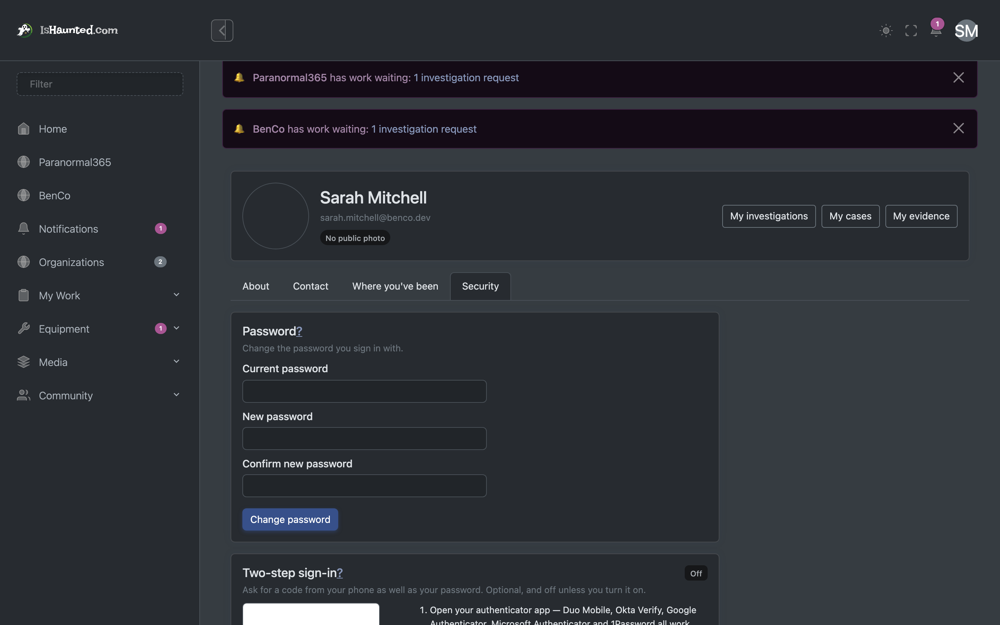
Scan the square with your app, or type the key beside it in by hand.Any authenticator app works — Duo Mobile, Okta Verify, Google Authenticator, Microsoft Authenticator, 1Password. Scan the square code with the app, type the six digits it shows, and it is on. If you cannot scan, the key is printed beside the code to type in by hand.
Save the recovery codes. They are shown once, and once only — we keep a scrambled copy that cannot be read back, so nobody can recover them for you afterwards. Each one signs you in a single time if you lose your phone. Print them, or put them somewhere that is not the phone.
Turning it off again needs a current code from your app, which is what stops somebody at your unlocked computer removing it.
Enter your email and password as usual. We then ask for the six-digit code — on a phone the keyboard offers it straight from the notification, so you rarely have to read it across.
If you have lost your phone, choose I can't use my app and enter one of your recovery codes instead. Each one works once.
The message says which of these it is, because the answer is different every time:
| What it says | What to do |
|---|---|
| Invalid email or password | Check both — or see the note below if you usually sign in with Microsoft. |
| Confirm your email address first | Open the link we emailed you when you signed up — or press Send the email again in that message if it never arrived. |
| This account is locked for a few minutes | Too many attempts. Wait — resetting your password will not help, because it was not the problem. |
| Too many sign-in attempts | The same, but counted across the whole site rather than your account. Wait a minute. |
| Couldn't reach the sign-in service | Nothing is wrong with your password — it was never checked. The site could not reach the service behind it. Try again shortly. |
If you are asked for a code, nothing has gone wrong at all — your password was right, and that is simply the second step.
Forgot your password? on the sign-in page emails you a link to choose a new one. The link brings you back to the site; if your mail app breaks the link, the email also carries a code you can paste in by hand.
The same flow covers a case that does not look like "forgot" at all: an account created by signing in with Microsoft has no password. Password sign-in against it says "invalid email or password", which is true but unhelpful — there is nothing to be wrong yet. Use the reset link to add a password, and both ways of signing in will work from then on.
One thing first: the reset link only goes to a confirmed address, and a Microsoft-made account starts with its address unconfirmed — we sent a confirmation link when the account was made. If you never followed it, sign in with Microsoft, open your profile, and press Send the link again in the notice at the top.
Already signed in? Profile → Security → Password does the same job without the email round trip: it offers Add password if your account has none, and an ordinary change-password form if it does.
A list that shows nothing is telling you one of two different things, and the page says which.
"Nothing here yet", or a sentence like "This group hasn't shared any files yet", is an answer. The list really is empty. Nothing is wrong, and there is nothing to retry.
"Couldn't load this", in a bordered box with a Try again button, means the page could not fetch the list at all. What you were looking for is still there — the site could not reach it, or was not allowed to. Try again first. If it keeps happening, the box usually names the reason, and quoting that on the contact form saves a great deal of guessing.
The difference matters because these used to look identical: anything that failed to load simply showed an empty list, so the site would tell you your group had no members when it had four and had merely refused to say so.
The bell in the top bar counts everything waiting on you, and the number is a total across several different kinds of thing. Open it, or the Notifications page, to see which.
The sidebar's Notifications entry, the bell and the page all report the same number, and that number is always the sum of the rows underneath it. If the bell says four, four things are listed.
| Replies on your cases | A group has written back about a case of yours. |
| Client messages awaiting a reply | Somebody has written to a group you belong to. |
| Unread group messages | Internal mail at one of your groups. |
| File permission requests | Somebody wants access to a file you own, and is waiting on your answer. |
| Equipment requests & overdue gear | Waiting on your decision, or late back. |
| Posts that mention you | Somebody named you with an @name in the feed. |
| Unread messages | Sent to you through the platform. |
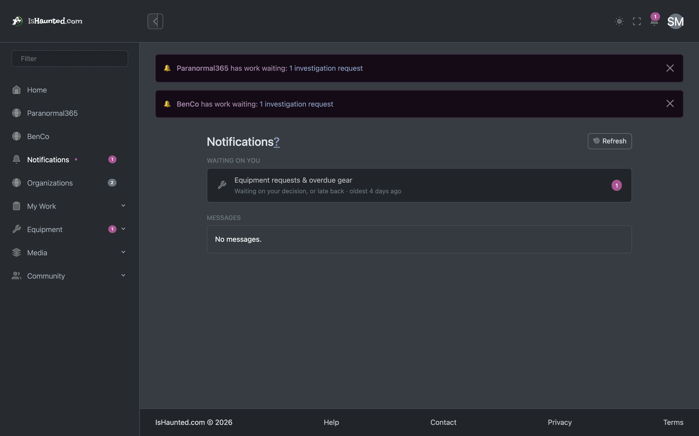
Everything waiting on you, grouped by what it is.Buckets with nothing in them are not shown. The page is a list of things to do, not a dashboard of zeroes.
The colour means age, not importance. A single item from last week is coloured more urgently than five from this morning, because the old one is the one somebody is still waiting on.
Opening something is what clears it — a message you have read, a post you have opened, a request you have answered. Nothing disappears before you have seen it.
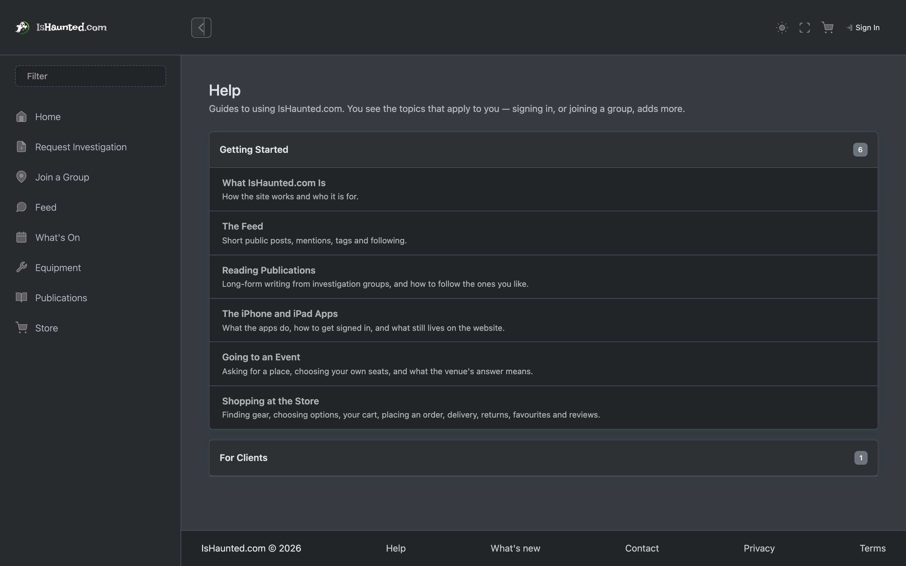
The help index. You only see the topics that apply to your account.Every page that does something non-obvious has a small ? beside it. That opens the relevant part of this documentation in a new tab, so you never lose what you were in the middle of.
Contact, in the footer, reaches the people who run the site — not a group. Use it for anything about the site itself: an account you cannot get into, something that looks broken, a question this documentation does not answer. To ask a group to investigate something, send a request instead; that is a different thing entirely and goes to the group, not to us.
You do not need an account to write in. After you send the form you are given a tracking link — keep it. It is how you read the reply and see whether the message has been picked up, and it is the only way back to a message sent without an account. If you were signed in when you wrote, the message is attached to your account as well.
On a group's public page, signed in, there's an Apply to join box (when the group is taking applications). Say a line about yourself if you like, send it, and the group answers — you'll see the state of your application right there on their page.
Or found your own: Organizations → Start a Group walks you through it in four short steps — what you're starting and its name and web address, where you work (optional, it feeds the "near you" search), whether you're taking applications, then a review. Only the first step is required, and closing the tab keeps a draft so you can pick up where you left off.
The first question is what kind of group this is, because it decides what everything else starts as:
| Investigation group | Starts private: your address is hidden from the public and your calendar is members-only. Cases stay between you and your clients. This is what most groups are, and it's the default. |
| Ghost walking tour | Starts public: your meeting point is shown and searchable, and the tours you schedule are visible to everyone with no account needed. A tour nobody can find is worth nothing, so it doesn't start hidden. |
Neither choice locks anything away — a tour company can take investigation requests, and an investigation group can run public tours. It's a starting point, and every part of it is changeable from your group's settings afterwards. If you run tours as well as investigations, turn on runs public tours in your settings and you'll be listed under walking tours in the group finder while your badge still says what you mainly are. You're the owner from the first moment, and your new group's page offers a quick tour of what to do next — relaunch it any time from the ? button on your group's page.
Once a group accepts you, its hub shows you the member baseline: the group's details, the member list, the calendar, messages, and files. Cases and investigations are not part of the baseline — those tabs appear when the group hands you a role that opens them (many groups use an "Investigator Role" for exactly this). Titles like Probationary or Senior Investigator are seniority labels and open nothing by themselves; if a tab you expect is missing, it's a role you're missing, not a bug — ask whoever runs your group.
Public events are open to anyone — you'll find them on a group's page and under Join a Group. Say you're coming with your email address, click the link we send, and you're on the list (that also creates you an account, with no password to invent).
Afterwards, if you captured something, the event's page lets you offer it to the group. A member reviews every submission. If yours is accepted it becomes part of that event's public record, credited to you; if it's declined you're told why, and your file stays private. You can see where each of your submissions stands on the same page.
Short public posts, mentions, tags and following.
The Feed is the short-form public side of the site: anyone signed in can post, and everyone signed in can read. It is where you say what you found last night, rather than write it up.
Long pieces do not belong here — a post is at most 1,000 characters on purpose.
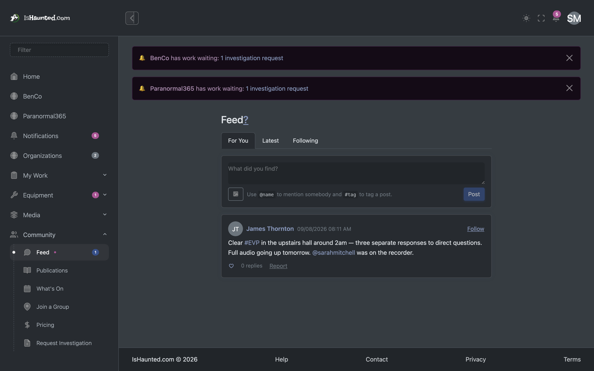
A post. #EVP and @sarahmitchell became links on their own — you only typed them.Type in the box at the top of the feed and press Post. Plain text, no formatting: the point is that a post is quick to write and quick to read.
Write @ followed by their name — @sarahmitchell. If it matches somebody, their name becomes a
link and they are told they were mentioned. If it matches nobody, it stays as ordinary text, which
is how you can see a typo did not reach anyone.
An @name is the permanent one somebody chose when they made their account, not their display name. So a mention keeps pointing at the right person even after they change how their name is shown.
An email address in a post is not a mention. ben@example.com stays an email address.
Write # followed by a word — #evp, #bellwitch. The tag becomes a link to everything else
carrying it.
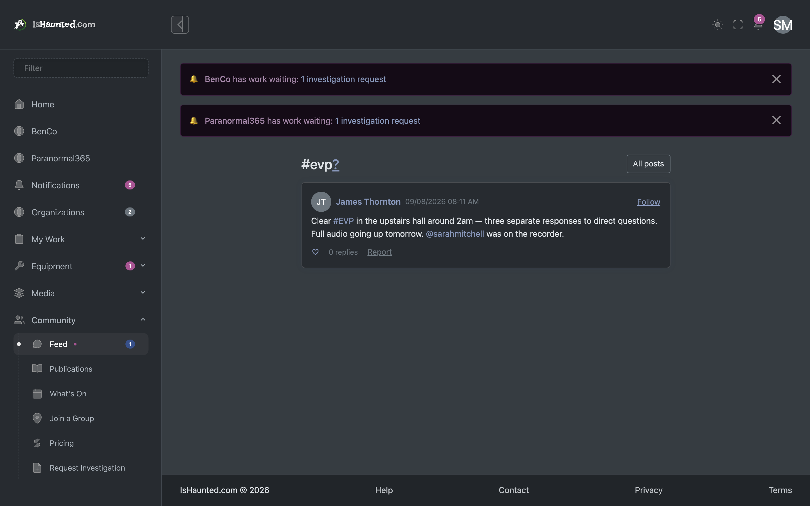
Clicking a tag opens everything carrying it. The address is shareable.Capitals do not matter: #EVP, #evp and #Evp are one tag, so they all gather in the same place.
Tags cannot start with a number, because #1 and #2026 are almost always a list or a year rather
than a subject.
When you attach a photo or video, the composer offers a category — the same list of experience types used everywhere else on the site (Apparition, Voices / Whispering, EMF Spike, and so on). It is always optional, and a plain chat post does not need one.
Picking one does two things: the category appears as a small label on your post that readers can click to see everything else of its kind, and it tells the site what your footage claims to be. If the site's own measurements disagree — a clip tagged as voices that carries no audio track, for instance — you, and only you, will see a gentle note on your post offering to change the category. Nothing is blocked and nobody else sees the note; an honest mislabel is not misconduct, and changing it is one click. Posts whose content clearly does not match their label rank a little lower in For You until it is sorted out.
When you export a finished video in the editor, Post to the feed appears beside "Upload to server" and "Save to my machine" (if you're someone who may post at all). A render made from a case names that case before anything goes public, and footage from a private engagement requires an explicit confirmation — the client was promised privacy, and publishing any of it is a deliberate, recorded choice.
The group that worked the case decides separately whether the post carries their name: until they claim it, the post is credited to you alone. A claimed post wears the group's name, a link to their page, and a Group verified badge — the group vouching that the footage is what it says. Moderator reviewed appears when a site moderator personally cleared the video. Both badges lift a post's standing in For You.
Every eighth spot in the main feed carries a card instead of a post — alternating between a group promoting itself (always marked Promoted) and the site's own pointer to the group finder. If you choose Show groups near you on a promoted card, your browser asks your permission and the cards re-order nearest-first. Your location is used for that one ordering and is never stored — leave, and it's forgotten.
| All posts | Everything, newest first. |
| Following | Only people you follow — plus your own posts, so you can see what you just wrote. |
Click a post's reply count to open it and read the replies. Opening a post is what clears a "mentioned you" badge from your Feed menu entry, so nothing disappears before you have seen it.
While the page is open it quietly checks for newer posts; a "new posts" button appears when there are some, and clicking it brings them in without losing your place. The site's home page also shows a small taste of the feed's current top posts — the front door on the front page.
Press Follow beside somebody's name on a post, or on their feed page. It is one-directional and nobody is asked: following changes what you are shown, not what you are allowed to see. Everything in the feed is public to signed-in people either way.
Press it again to stop.
If a post should not be here, press Report on it. An administrator sees it and decides.
Two things worth knowing:
You cannot report your own post.
The whole feed can be switched off for the site by an administrator, in which case the menu entry and its pages are simply not there. That is a decision for whoever runs the site, not a fault.
Long-form writing from investigation groups, and how to follow the ones you like.
Publications are where groups write at length. A publication is a group's own title — Field Notes, The Ridgeway Case, whatever they call it — and inside it are posts: case write-ups, research, notes from a night that turned into something worth explaining properly.
If the Feed is what somebody says on the way home, a publication is what they write the following week.
Everything published is readable by anyone. No sign-in, no email address, nothing to dismiss before you can read. Share a link to a post and the person you send it to can simply read it.
An account only matters if you want to subscribe, which is how you keep track of the groups whose writing you want to keep up with.
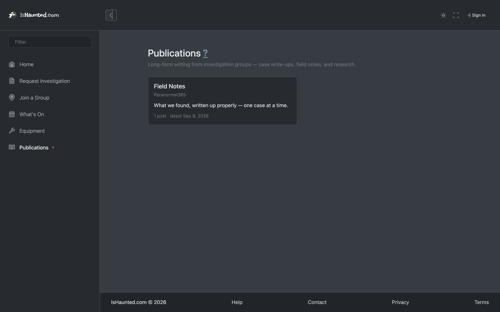
Every group with something published. The card shows how many posts there are and when the most recent one went up.Publications in the left-hand menu — under Community once you are signed in — lists every publication with at least one published post. Publications with nothing in them yet are not listed — a title that leads to an empty page is not worth the click.
Open one and you get its posts, newest first, each with a line or two about what it covers.
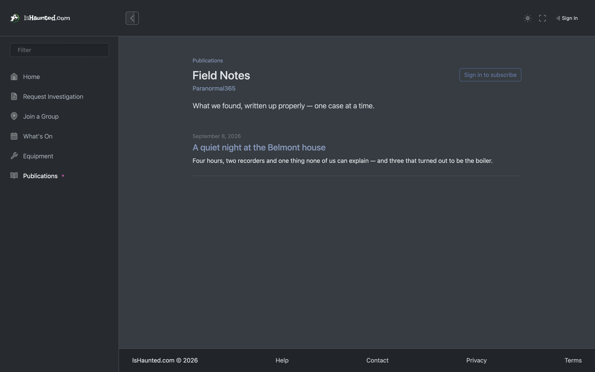
A publication's own page. The group's name links back to its profile, and Subscribe is in the top right.Subscribe on a publication's page tells the group you are reading. If you are not signed in the button says Sign in to subscribe instead, and brings you back to the same page afterwards.
Your subscriptions appear at the top of the Publications page, with the date of each one's most recent post, so you can see at a glance who has written something new.
Subscribed on a publication you already follow unsubscribes you. Nothing is lost by unsubscribing — you can subscribe again later, and everything published stays readable either way.
Some posts may be marked Subscribers. You will see the title and the opening lines, and the rest is only for people who subscribe.
Today nothing on the site is actually marked this way — every post is free to read in full. The label exists because groups have asked about it, and it is better for you to have seen it explained here than to meet it for the first time on a post you wanted to read.
A post is a page: a title, the date it was published, and the piece itself. There is nothing to expand, no "continue reading", and no interruption partway through.
If a link you followed leads nowhere, the post has been withdrawn. Groups can take a post down — usually because something in it was wrong — and a withdrawn post stops being served straight away.
What the apps do, how to get signed in, and what still lives on the website.
There are native apps for iPhone and iPad — one app that runs on both, laid out for each. It is the same account and the same data as the website: sign in on your phone and you are looking at the same groups, cases and investigations you see in a browser, because both are talking to the same place.
The apps are built for the half of this work that happens away from a desk — standing in a building at two in the morning with one hand free. Anything long or fiddly (writing a report, editing video, laying out a public page) stays better on the website, and always will.
Reading the feed and browsing public events needs no account at all, exactly as on the website. Sign in when you want to join in.
Signing in works the same way it does in a browser, including two-step codes if you have them switched on. You can also sign in with your Apple Account: if you already have an account here under the same email address, that signs you into it rather than making a second one. If you don't, the app asks for the name people will see and your @name, and makes one — Apple has already confirmed the email address, so there is no confirmation link to wait for. Choosing "Hide My Email" works too; the address Apple gives us is a relay that reaches you. Your phone stays signed in afterwards; you will not be asked again every time you open the app.
Setting two-step up on the phone works a little differently from the website, for a good reason: on a phone the app is itself the second device, so there is no QR code to scan. Instead the app shows you the key to copy, and offers a link that hands it straight to your authenticator app. Your recovery codes are shown once, with a button to save or send them — the site cannot show them to you again.
| The feed | Scroll it signed out or signed in, open a post and its replies, tap a hashtag or category to see everything like it, and open somebody's profile. Photos and video play in the app. |
| Posting | Write a post, attach a photo or video from your library, or take one with the camera right there — which is the thing a phone is genuinely better at than a laptop. Add a category so people can find your footage. Like, reply, follow and report. |
| Notifications | Everything waiting on you, in the same buckets the website's bell uses. Colour follows the AGE of the oldest item rather than the count — fifty messages from this morning are a busy day, one from last week is the thing worth chasing. Rows open exactly what they count. |
| Your cases | Your cases and their timelines — what happened, what the group has written back, and photos attached to either. Log something that happened right from the case, with photos from your library or one you take there and then; say when it happened, or say that you don't know rather than guessing. Reports your group has published are there to read in full, and to share or save, and you can message your group about the case — what you send and what they send back, in one conversation. Who to contact is a tap away: their email opens Mail, their number dials. |
| Investigations | The ones you're on, split into what's coming and what's been, with your assigned role and any evidence deadline. Where you've been draws the places you've investigated on a map. |
| Events | Public events, readable without an account, and you can reserve a place. Add to calendar puts one straight into your own calendar. |
| Field Kit | The phone as an instrument during an investigation — see below. |
| My evidence | What you have offered at other people's public events — yours to open whatever they decided, and yours to add to the archive of the place it was taken at. |
| Your account | Sign in and out, create an account, confirm your email, change your password, and turn two-step sign-in on or off. |
Anything the app cannot do yet says so plainly rather than showing you an empty screen. A count with no screen behind it yet is still listed on Notifications — it just isn't tappable, rather than pretending to lead somewhere.
Field Kit records an investigation on the device. It needs no signal and no account: a member standing in a cellar with no bars can start recording, and everything stays on the phone until they choose to send it. Signing in still matters, because a session records who was signed in when it was made — and being signed in needs no connection, so a member who signed in last week is still identified in that cellar.
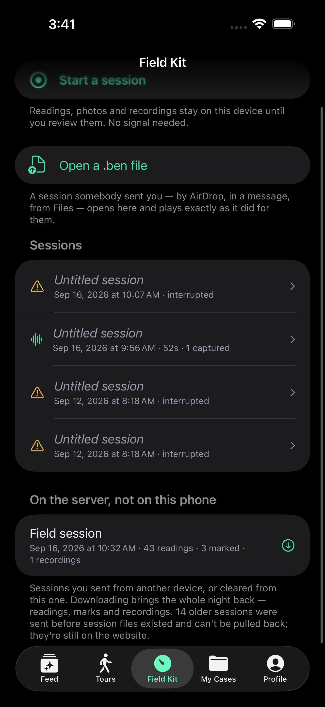
If the night turns out to be nothing before you ever press Start, tap Discard next to the Start button. The session is removed and the space comes back at once. A session that was set up but never started also survives the app being closed: it comes back exactly as it was, ready to start or discard — it is not reported as interrupted, because nothing was lost.
Nothing you record needs a signal, and nothing leaves the phone until you send it.
The dial is a magnetic field meter, not an EMF meter in the sense most detectors mean. The phone's magnetometer reads the DC magnetic field — the Earth's, plus whatever local wiring, iron and motors are doing to it. It cannot see the AC electromagnetic fields a K‑II style detector responds to, and the app says so on the screen rather than leaving anyone to assume otherwise.
The needle shows how far the field has moved from the base level you set, not the absolute figure. An absolute reading means nothing on its own: the Earth alone is around 500 mG and every building bends that. Setting a base is the act that turns a number into a measurement, which is why several things refuse to work until you have.
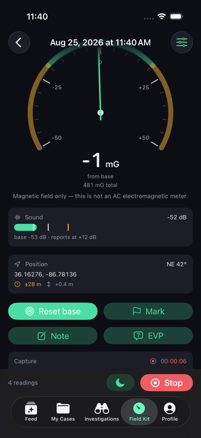
On screen at once: the wall clock and how long the session has run, the dial in milligauss, a sound meter in decibels with your base and report levels marked on it, and where you are — with the accuracy of that fix. Indoors a phone is routinely 20 to 50 metres out, often the width of the whole building, so the number is always shown. A reading taken with no fix at all carries no position rather than a made-up one.
If the magnetometer reports itself uncalibrated, nothing is reported as an event and the screen asks you to move the phone in a figure of eight. A reading the instrument does not trust is not evidence.
Switches decide what is running: magnetic field, audio, video and location. Each says what it costs. Switching one off tears it down rather than leaving it running quietly — which is the whole reason to switch video off at two in the morning.
Video is captured as clips, not a continuous recording. Five hours of video is tens of gigabytes and a flat battery long before the night is over.
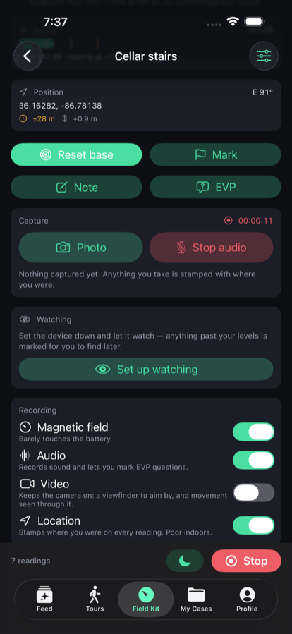
At the top of the session screen is the room. Tap it, pick one, and everything from that moment on — every reading, every mark, every photo — is recorded as having happened there. Moving rooms is one tap, and it drops a mark of its own, so a review a week later shows when you went down to the cellar.
This is worth doing because nothing else can tell rooms apart. A fix indoors is twenty to fifty metres wide — the width of the whole building — so the app cannot work out which room you are in, and it does not pretend to. A person saying so is the only reliable source there is.
Rooms you have already used this session come first in the list, so walking a loop through a house is a tap per room rather than typing a name again in the dark. You can stop naming rooms at any time; readings keep their position and simply stop claiming a room.
Mark drops a marker at this second; Note adds one with a line of explanation. Under Levels you set the base and the report level — how far the field or the sound has to move before the app marks it for you — along with a quiet period, so one door slamming leaves one record rather than forty.
Writing in the dark with a glove off is the worst part of taking notes, so Note lets you speak instead. The words are turned into text on the phone itself — nothing you say is sent anywhere, and it works with no signal, which is the only reason it is worth having in a cellar.
You can correct the wording before saving; a transcription is a machine's best guess, and the person who said it is the authority on what they said.
If a device cannot turn speech into text without a connection, the option is not offered at all. A button that works in the car park and fails in the building would be worse than none. Typing is always available, and you can record the note as audio instead — sometimes what was said matters less than how it was said.
The same choice appears when messaging your group about a case: type it, or speak it, on any device that can transcribe offline.
Photos you take during a session are kept with it. Under Property photos you can choose one to stand for the place — the front of the building, the room in question — and it represents the case and the investigation, so a list of cases shows somewhere recognisable rather than a row of identical folders.
Choosing is entirely optional and can be undone: tap the chosen photo again to un-choose it. Most photographs in a session are evidence and should never be a portrait of anything, so nothing is picked unless you pick it.
Each photo carries the room you were in when you took it, so "a doorway" becomes "Cellar — a doorway" a month later, when it matters. That comes from the room you set on the session screen; there is nothing extra to type per photo.
Watching arms the session so it records events while nobody is holding the phone. It can watch for the magnetic field, sound, the device itself being moved (somebody knocking the tripod) and movement seen through the camera. Those last two answer different questions and the app spells out which is which. Camera motion is deliberately crude — it cannot tell a person from a curtain — so its sensitivity is adjustable and every trigger records how much of the view changed.
Arming is refused until the base levels the triggers measure against have been set, and the screen stays awake while watching so it can be read across a room.
EVP mode marks the question and the silence after it, not just the moment you spoke. Both marks point into the recording with the offset, so reviewing later means jumping to a list of places to listen rather than scrubbing hours of tape. Asking the next question closes the previous wait. Recording keeps running when the screen locks.
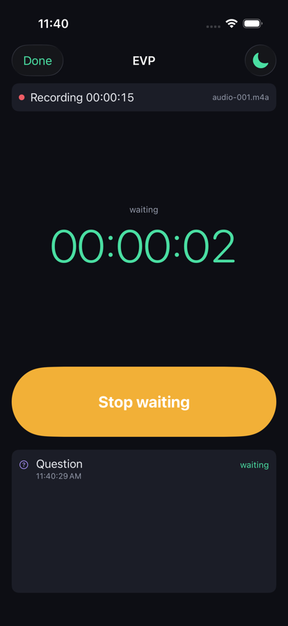
A lit phone in a dark room reaches the recording, the room and everyone in it. The moon button takes the screen to black and holds the phone awake; a tap anywhere brings it back. Your brightness is put back exactly where it was.
A finished session plays back on the phone: one playhead moving the magnetic trace, the map, the compass and whatever was being recorded at that second, with every mark listed to jump to. Marks land you a few seconds before the event so you hear what led up to it.
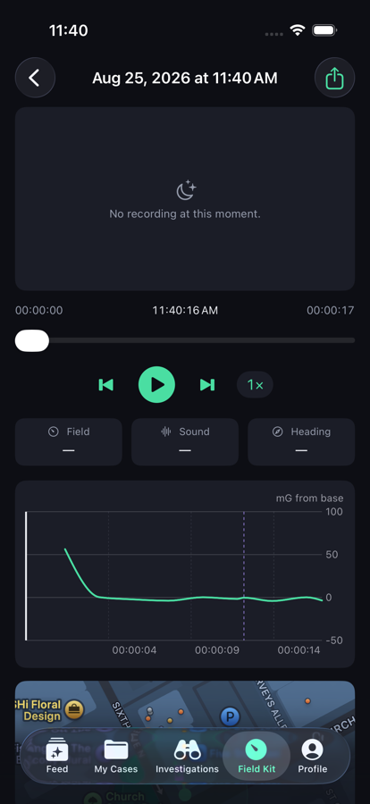
On an iPad the same screens use the extra width, putting the instruments beside the log while recording and the trace beside the map while reviewing.
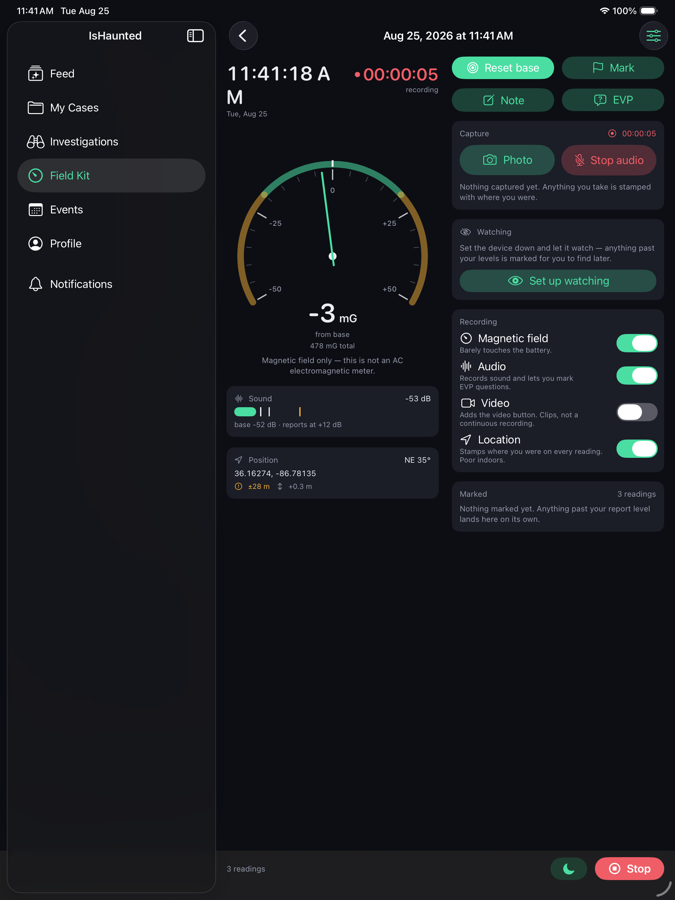
Reviewing on an iPad puts the trace beside the map, so a spike and the place it happened are visible at the same moment rather than one scroll apart.
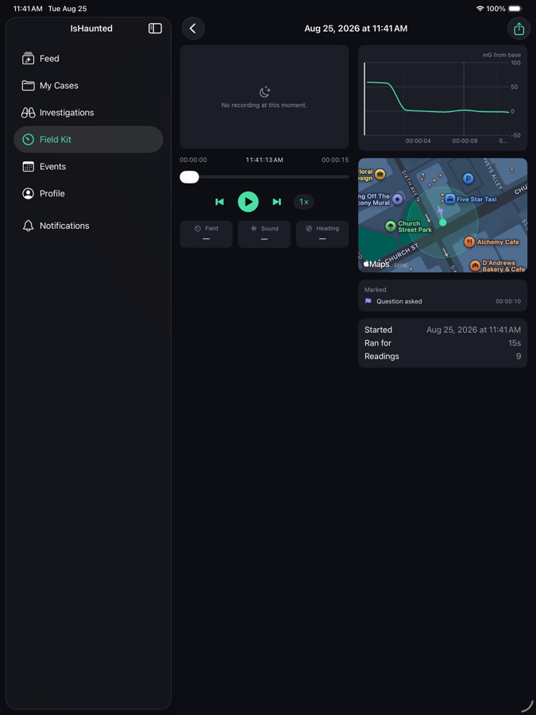
A session logging magnetic field and position costs very little. Audio adds a steady trickle; video is the one that will end a night early, which is why it is off unless you ask for it and why it records clips rather than running continuously.
The readings themselves are tiny — a five-hour session is a few megabytes of numbers. It is the recordings that fill a phone, and those are the only thing clearing a session removes.
The dial says the magnetometer needs calibrating. Move the phone slowly in a figure of eight. Nothing is reported as an event until it settles, because a reading the instrument does not trust should not ring a bell.
Nothing is being marked. Check that you set a base level, and that the session is watching if you have put the device down. Until a base exists there is nothing for a reading to depart from.
The position never appears. Indoors a phone often never gets a fix at all. The session carries on without it; readings simply have no position rather than a guessed one.
A recording came back empty. The app says so rather than listing it — usually another app had the microphone. Start it again.
The app closed mid-session. The session survives. It is listed as interrupted, with everything recorded up to that moment intact. Its end time is left unknown, because it is.
Recording works offline; sending needs a connection. When you have one, choose the investigation it belongs to — which chooses its case too — and pick which recordings go with it.
Files go up one at a time, so a dropped connection costs one file rather than the night, and anything that failed can be sent again without re-sending what already arrived. Each file travels with a checksum, and a file that arrives damaged is flagged rather than quietly accepted.
Who can send a recording to an investigation: anyone who was on it, any active member of the group running it, and — when the investigation or its case is public — anybody at all. An open investigation is an invitation, and a dozen visitors with phones is much of the value of running one.
A session does not need an investigation at all. Somebody scouting a building, or a guide walking a route, can keep it against their own account and attach it to an investigation later.
Once everything is up, the app offers to clear the recordings off the phone. It only offers when every file is confirmed on the server, and clearing takes the photos, video and audio while keeping the session, its readings and its marks — those are small, and losing the trace of a night to reclaim video space would be a poor trade. Individual captures can be deleted at any time for the ones not worth keeping.
Uploaded sessions play back on the website too, on the same one-playhead idea — and the case manager can cite them in the final report. A report section of type Field Sessions points at the sessions recorded for that case, and the PDF the client receives says what each one holds: where it was, when it ran, who recorded it, and how many readings and marks it carries. Your work in the field ends up in the document, rather than only in the system.
A session can also be sent to somebody with no account at all — a client, or a producer — as a link that expires, can be withdrawn, and tells you whether it was opened. That is done from the session's playback page on the website; see Working a case for what the link does and does not carry.
An hour of recording usually matters for ten seconds. On the Send screen, under What to send, the session sits on a track with a green dot at the start and a red dot at the end. Drag the green dot to move the in point and the red dot to move the out point; the time under each shows as you drag it, and the bolder green band between them is exactly what will be sent.
Below the track you can see what is under the handle — the field and sound at that moment — and Play what will be sent runs from the in point to the out point with the recording following, so what you hear is what the group will get and nothing else. The list beneath says, file by file, what happens to each recording: sent whole, cut to a shorter stretch, or not sent because it falls outside the window. Readings and marks outside the window are not sent either.
The full recording stays on this phone. Nothing outside the window leaves the device, and a cut recording is a copy — the original on the phone is never touched. Clearing the phone afterwards is a separate choice, offered only once everything has arrived, and it is the only thing that removes the original.
A trimmed session is named for what it is: back bedroom (20:00–30:00), with the in and out times after the session's own name, on the website's list, in the player and in any report that cites it. A session sent whole keeps its name.
Send the whole session puts both dots back at the ends.
A session can also be exported as a .zip in the IsHaunted device data format — the same published format any instrument maker can write. That file can go by AirDrop, email or Files to anyone, whether or not they use this site.
A session normally belongs to you, or to the investigation you recorded it for. There is a third option, and it is the reason the app is worth having without a group at all.
After a session has been sent, the send screen offers Add to the public archive. That puts the session's readings on the page for the place you recorded at — alongside everybody else who has ever recorded there.
One person's readings at a location are a story. The same location recorded by ten people, over years, is something anybody can check. If eleven of twelve visits show a magnetic anomaly on the same set of stairs, that is a persistent feature of the building. If one visit in twelve shows it, it was noise. Nothing else in this field can tell those two apart, because everybody's recordings normally stay on the phone that made them.
My Field Sessions on the website lists everything the app has sent up, and a session that is yours alone has a delete beside Play back. It asks first, and it takes the readings, the recordings and any share link you made of it. There is no undo.
Three sessions cannot be deleted there, and the page says which:
The place itself is never touched. Where a session happened is a fact about the recording, not a consequence of having shared it.
If you go on a ghost walk or a paid event, you can offer what you caught to the group running it — and Settings → My evidence is where everything you have offered lives afterwards.
It exists because the two decisions involved are not the same decision, and only one of them is theirs:
So the screen shows both, side by side: the group's answer, and whether it is in the place's archive. A photograph you offered is always yours to open, whether it is waiting, accepted or turned down — you never hand over your only copy.
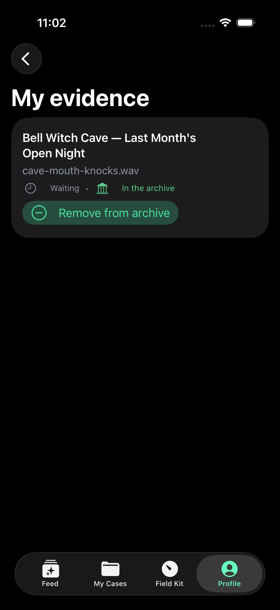
Where the event was held at a public location, each row offers Add to place archive. Where it was not, the row says so rather than showing a button that could only refuse. This is the part that makes a tour worth more than a night out: a walk that visits the same building every week builds that building's public record faster than anything else on the site.
The app is a tool, and a tool should not be cluttered with parts that do nothing in your hands. What it offers follows who you actually are:
| If you are | You see |
|---|---|
| Investigating on your own | The feed, Field Kit, and your profile. No case list, no investigations — you have neither, and an empty screen is worse than no screen. |
| Somebody's client | Your case as well, even though you belong to no group. You asked for the investigation; it is yours to follow. |
| In a group | Cases, investigations and events, as your group's roles allow. |
| On a ghost walk | Events, and My evidence for what you photographed there. |
Nothing is hidden that you have permission to use — this is about whether a section leads anywhere for you today, which is a different question from whether you are allowed through the door. Join a group and the sections appear; leave one and they go quiet again.
The app follows exactly the same rules as the website about who may see what. A private engagement is redacted the same way, media waits for the same safety check before it appears, and a group's name only appears on footage it has claimed. Nothing is looser on a phone because it is on a phone.
The iPhone and iPad app has been submitted to the App Store and is awaiting Apple's review. When it is approved, this page will link to it.
Once the app is installed, tapping a link to this site from your mail or messages opens it in the app rather than in the browser, on the pages where the app has a matching screen: the feed and anything in it, your cases, your investigations, notifications, your profile, the events list, and an email confirmation link.
Everything else stays in the browser on purpose. Some pages have no app screen at all — a group's public page, a shared session link, an individual event — and sending you to the app for one of those would take you away from the page that actually works. If a link does not open the app, that is the intended answer rather than a fault.
Nothing changes on a phone or computer without the app: every link opens the website as it always has.
On Android, Windows or a Mac there is no native app, but the website can be installed to your home screen or dock and will then open in its own window with no address bar. The browser offers this itself — Install in Chrome's address bar, or Add to Home screen in its menu.
It is the same site, so everything you can do on the web you can do there. What it does not have is the Field Kit, which needs the sensors on an iPhone.
How to ask a group to look into what you have experienced.
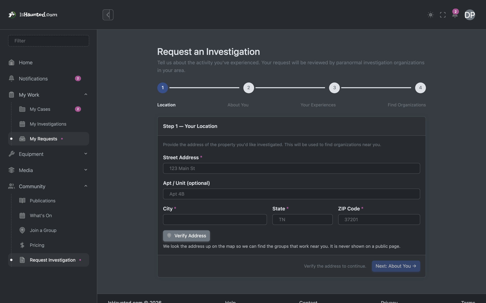
Describing what has been happening. Nothing is sent to a group until you choose one.You do not need an account first. The form opens to anybody: start at Request Investigation and fill it in. The last step asks your name, an email address and a password, and your account is created from the request when you send it. If you already have an account, sign in first and those questions are not asked at all.
Everything you type is kept in this browser as you go, so closing the tab does not lose it.
You will be asked to describe what has happened. Write it as plainly as you can, in the order it happened. Investigators find dates, times and who was present far more useful than adjectives — "three knocks on the north wall, about 2am, twice last week" is worth more than "terrifying activity".
Request Investigation starts a request and is the quickest way in — at the top of the menu before you sign in, and under Community once you have. To look at who is out there first, Join a Group in the same place lists the groups working in your area. You can send the same request to more than one; each decides independently whether to take it on.
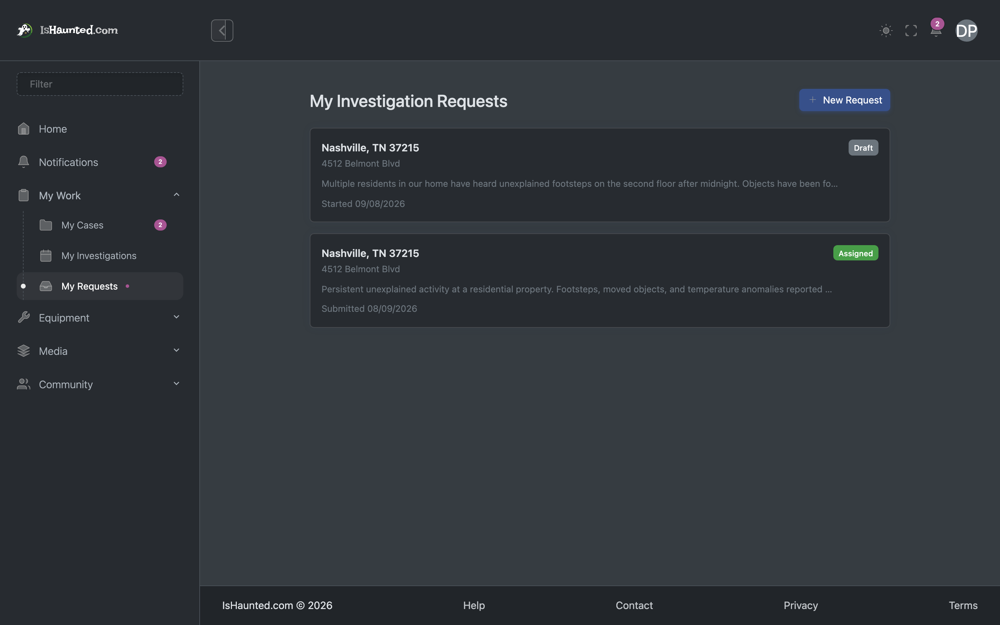
My Requests tracks where each request stands with each group you sent it to.Groups need your address to reach you — that is the point of the request. Press Verify Address on the first step: we place it on the map so we can find the groups that work near you, and the form will not go on until we have. It is never shown on public pages, and it is not shared with groups you did not ask.
Your name, address and what you tell us are shared only with the group you send this to. None of it is public, and none of it is ever sold.
That is the whole rule. The group that accepts your case sees your details; a group you did not send the request to never does; nothing here is published unless you and the group later agree to publish a case, and even then a case can be published under a name of your choosing rather than your own.
Your account is not usable until you open the link we email you and press the button on the page it takes you to. Until you do, the group cannot message you — they can still see your request and still accept it, and they are shown that your address is not confirmed yet, so they know why you may be quiet. Open the link as soon as you can.
The page it lands on tells you where your request stands and shows you your @name — the handle other people use to mention you. We choose one from the name you gave, and it does not change.
If the email address you typed already belongs to an account here, the request is not added to it straight away, and the form does not tell you either way — a form that said "that email has an account" would be a way for anybody to discover who has one. Instead we write to that address with a note about the request and a link. Sign in with that account, open the link, and you can add the request to your account or discard it if it was not you. Requests wait two weeks.
A request you have not sent is a draft. It is yours alone — no group can see it — and it shows as Started rather than Submitted on your list. You can pick it up later, or Delete draft to remove it for good. Once a group has received it, deleting is no longer the right idea: use Withdraw instead, which tells the groups it has been taken back.
The case page, logging occurrences, and who can see what.
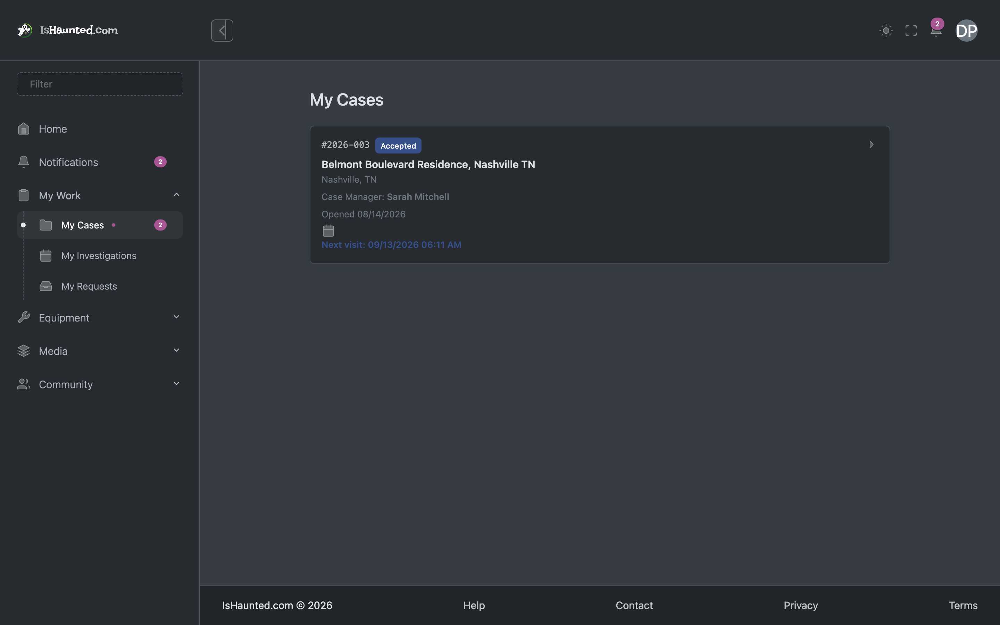
My Cases lists the cases a group has opened for you.My Cases lists every case you are part of, whether you opened it or were invited onto it by someone else. Opening one shows the calendar, everything logged so far, files, and your message thread with the investigators.
Use Log Occurrence whenever something happens. Record it while it is fresh — the date and time matter more than polish. You can attach photos, audio, or video, and you can tag what kind of experience it was so investigators can group similar reports.
Several people can report the same moment. That is expected, not a problem: the timeline shows entries that share a time together and labels them, because two independent accounts of one event are more useful than one.
| Marked | Seen by |
|---|---|
| Internal | The investigators only. |
| Shared with you | The investigators and you. |
| Public | Anyone, if the case is ever published. |
Your own reports are always visible to you and to the group working your case.
If a case is ever published, you choose the name shown — "A local family", "The homeowner", or anything you prefer. Set it on your case page under How You're Named Publicly.
Your investigators always see your real name. They cannot work a case while blind to who reported it, so the alias applies to public pages and shared documents only.
On a private case — yours is one, because it came from your request — the protection goes further than the name slot: if an investigator's written report or a timeline entry mentions you by name, the public copy substitutes your chosen name (or a neutral phrase like "the client") automatically. What they wrote is preserved for the investigation; what the public reads does not carry your name.
A paused case means the organization's subscription ended — nothing more. Nothing you reported or they collected has been lost, and all of it stays readable to you. If the group renews, the case resumes exactly where it left off. If your case had a public page, it comes off the public site while the subscription is lapsed — your privacy does not depend on the group's billing.
You can also move your case to a different organization, right from the banner on the case page. Pick a group, and choose what they will be able to see:
If a month passes with the case still paused, the platform sends you a reminder that the move is available — you never have to wait on a group that is not coming back.
Anything you don't share stays with the original case — visible to you, never to the new group, and nothing is deleted either way. The findings belong to the original group and to you, which is why this is your choice alone; the original group is not asked. The new group answers your request, and you hear their answer either way. Until they do, you can withdraw the request.
When your case changes status — accepted, active, being written up, closed — or when the group schedules, moves or cancels a visit, an email goes to your confirmed address saying the same thing your case page says, with a button that opens the case. Times in the email are given in UTC; the page shows them in your own time zone. If your address isn't confirmed yet, no mail is sent until it is.
The case page from the investigator's side — timeline, files, investigations.
Every case belongs to a group, and the group's own page is where its cases are listed.
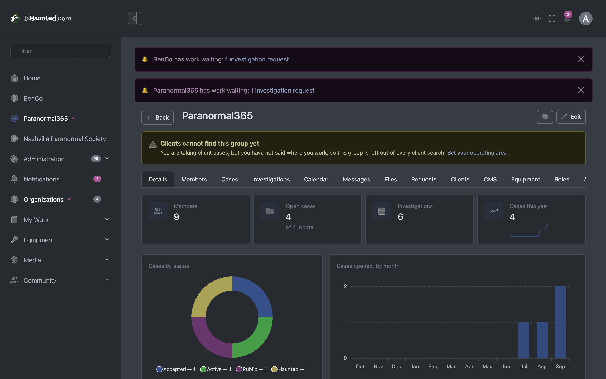
Open a group from Organizations, then its Cases tab, to reach any case it is working.Client requests arrive under Pending Requests on the group's Cases screen. Every request shows Review & vote, which opens everything the client submitted — their description, the location, and any files they attached: photos, recordings, documents. Every group the client sent the request to sees the same materials while it decides.
Marking a request Under Review tells your group it is decision time: everyone who can read the group's cases gets an internal message with a link to the review page, where they vote Take it or Pass, with an optional comment. The vote is advisory — it does not accept the case by itself. Whoever holds the accept permission decides, with the tally in front of them.
Review & vote stays on the card the whole time a request is open, including while it is Under Review — which is exactly when there is something to vote on. If you arrive at the review page before anybody has opened voting, Mark Under Review is there on the ballot itself.
Who gets the message, and who can vote, is everyone who can read the group's cases. That is the Investigator Role or something wider — see What new members start with in Group administration. A member with no role hears nothing about the request and cannot open it.
The first group to accept wins. The moment any group accepts, the other groups reviewing the same request are messaged that it is no longer available, and their review pages close. The client is told they have a group — and who their contact person is, when a case manager was chosen at accept time.
If your group is not going to take a request, decline it promptly — the client is waiting, and declining lets them offer it elsewhere without re-writing it.
The case title you are offered when you accept is the client's town — "Nashville, TN" — not their name. Type whatever your group wants instead; just remember the title becomes the heading on the case's public page if you ever publish it, so a real name belongs in the pseudonym field rather than here.
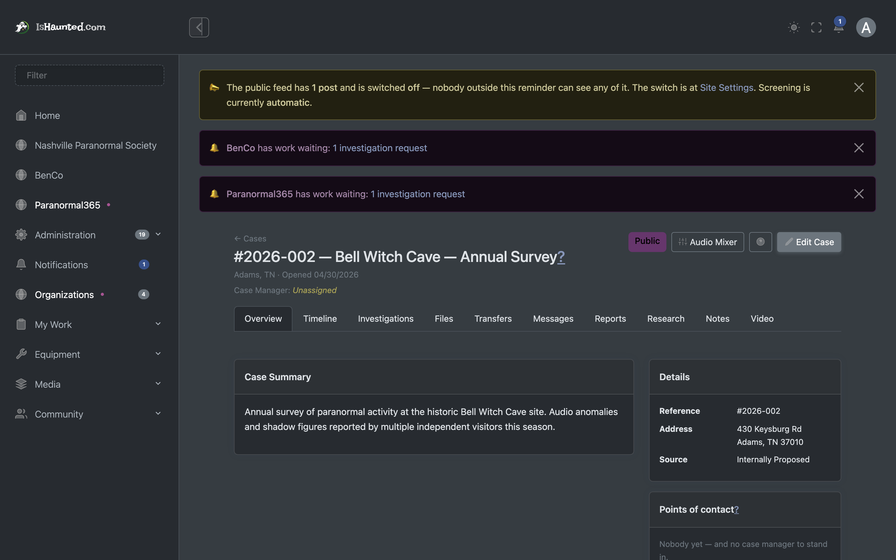
A case opens on Overview. Every other part of the case is a tab along the top.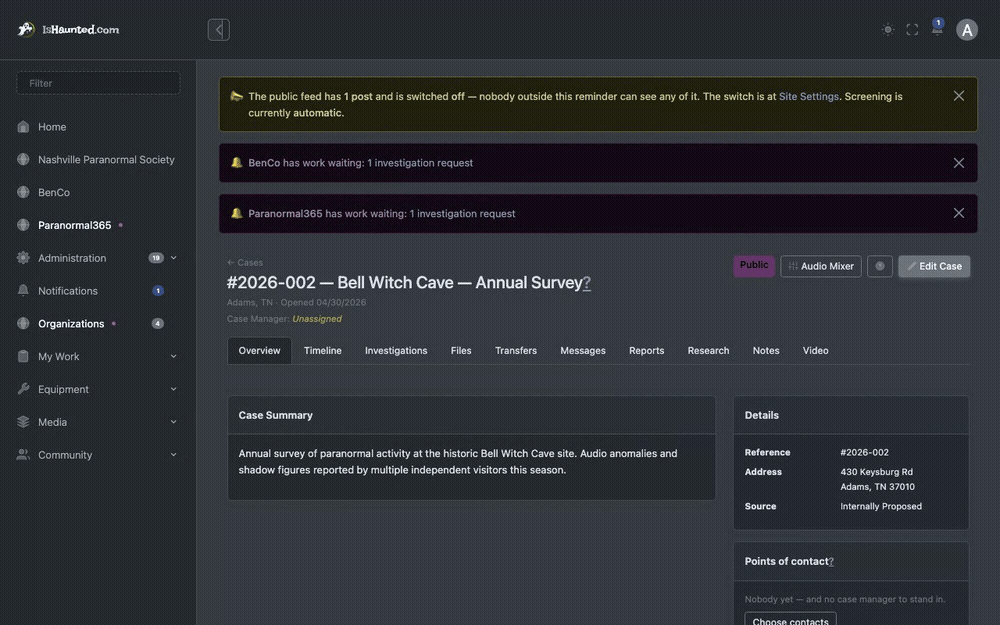
Timeline, Investigations, Files and Reports, each on the same case.Overview carries the original request exactly as the client submitted it, shown separately from the case description so the two never blur together as the case is edited.
Timeline is the working record. Every entry has a visibility: internal to the group, shared with the client, or public. Choose deliberately — "internal" means not shared onward, not hidden from its author.
Investigations covers scheduled visits, attendees and RSVPs, and each visit's binder.
A binder is the case timeline filtered to one investigation. Entries recorded during a visit stay on the main case timeline as well — that is the point of reusing it rather than keeping a separate store. Filter the timeline by investigation to see just that visit.
Readings recorded during a visit go in as Instrument Reading entries. Record the value, its unit, and what the ambient baseline was — a reading without its baseline cannot be judged later.
A report is written for your client, and by default that is the only person who ever sees it. If you want the world to read what you concluded, tick Show this on our public case page on the report, beside the summary and conclusion it publishes.
What goes out is those two fields and nothing else. Not the sections, not the evidence files, not the field sessions you cited. Those carry the working detail of an investigation inside somebody's home; the summary and the conclusion are the parts you wrote to be read.
Three things have to be true before a visitor sees any of it, and none of them implies another:
| The report is published | Publishing delivers it to your client. That is a separate decision from showing it to the world. |
| The case is public | Making a case public releases the case. That says nothing about a document written for its owner. |
| This box is ticked | Per report. You can untick it at any time and the page stops showing it immediately. |
Check for the client's details beside the box reads your summary and conclusion and warns you if they contain the client's name or their street — the same check the case title gets. It is advice, not a refusal: a surname is often a place name too, and only you know which yours means.
On a private engagement, names in the summary are substituted on the way out exactly as they are in the title and the timeline. You write in plain language and the public copy does the substituting, every time it is read.
The finding appears on the case's own public page under What we found, directly beneath your client's account of what happened. It is also available to the cases block in the page builder, so it can sit on any page you build.
A published report stays editable, and it should — a date is wrong, a name is misspelled, a paragraph reads badly. What matters is that your client finds out.
Edit and save as usual. The report then shows Edited since published beside its status, and a Re-publish button appears next to it. Re-publishing posts a fresh note on the case message board saying the report has been updated, so the person reading it knows the copy on their case page is not the one they were first sent.
Until you re-publish, nothing tells them. Your client reads the report from their case page, so your edits are already in front of them — which is exactly why the note matters. Re-publish when you have changed anything a reader would care about, and leave it alone for a typo nobody would notice.
Sessions recorded in the iPhone and iPad app land on the site whole — the readings, the marks, the positions, the room labels and the recordings, exactly as the device wrote them. The report is what your client is actually handed, so a report section can point at those sessions.
On the case's Reports tab, open a report and add a section of type Field Sessions. Choose Add field session and you get every session uploaded against this case's investigations, newest first: where it was, who recorded it, how long it ran, and how much it holds. Cite attaches it; Play back opens the session's own playback page, where the trace, the map and the recordings run together on one clock.
A citation is a reference, never a copy. The session stays where it was uploaded and keeps its own per-file checksums, so what the client reads and what the instruments recorded cannot drift apart. Removing a citation removes the reference only — nothing is deleted.
What the PDF says about each cited session:
If the picker is empty, no sessions have been uploaded for this case's investigations yet. Sessions recorded without picking an investigation belong to the account that recorded them and are not anybody's case material until somebody attaches them.
A client wants to see what was recorded in their house. A producer wants to decide whether a night is worth a crew. Neither is going to make an account to look at one thing once, and emailing the files means the group has no expiry, no way to take it back, and no idea whether anyone opened it.
So open the session with Play back and use Share this session on that page.
You choose four things:
Copy the link and send it however you like. Whoever opens it sees the readings, the trace and the recordings, and nothing else — no case, no group, no other session, and no way further into the site.
The same panel lists every link you have made. Withdraw kills one immediately, in every inbox it was ever pasted into — the next click gets nothing. Each row shows how many times it was opened and when it was last opened, which is usually the question you actually have.
Withdrawn and expired links stay in the list rather than disappearing. Was this ever shared, and when did that stop is worth being able to answer later, most of all if something turns up somewhere it should not have.
Who may make one: the person who uploaded the session, or an active member of the group running its investigation. Being able to read a session is not the same as being able to hand it to strangers, so somebody who only attended a public investigation cannot share other people's recordings.
Two people often record the same moment, and unrelated things sometimes coincide. Entries sharing an event time are shown together and labelled "1 of 2 at this time". The ordering is stable, so you can refer to an entry by position and have it still be there tomorrow.
The group's Investigations tab shows every visit the group has run, on one map and in two lists: what is coming up, and what has already happened. Case-bound visits and ones with no client case sit together, because they are the same kind of work.
Visits at the same spot share a single marker with a count on it — the same place accumulating visits over the years is the normal case, not an oddity.
If something is missing from the map, look just beneath it. An investigation whose location could not be found on the map is listed there with the reason, rather than quietly leaving the map one pin short. Usually the address has a typo, and correcting it puts the pin back.
The Edit button appears only on visits you are allowed to change. That is decided per investigation rather than by rank: the person who scheduled it, the case manager, whoever is leading that particular visit, group owners and administrators, and anyone the group has specifically granted the investigations permission.
Every investigation has a start and, if you want it, an end. Starts is a date and a time. Ends is a time, because the ordinary visit is one arrival and one departure — and it is allowed to cross midnight. Arriving at 3:00 PM and leaving at 8:00 AM is a single-day investigation: an end at or before the start is read as the next morning.
For anything longer — a weekend, a week — tick Runs over more than one day and the end becomes a date and a time of its own. The visit then reads with both dates wherever it appears, so nobody mistakes a week on site for an evening.
The end may not come before the start. Say so and the form refuses rather than booking a visit that finishes before anyone arrives.
The same applies to Propose Dates, where you offer a client a choice of windows.
Schedule an investigation on the group's Investigations tab books a visit that belongs to no client case — a landmark, a public building, or the group's own outing. Everything else about it works the same way: it appears on the map, the team can check in, and the findings are shared under the same rules.
Because there is no case behind it, there is no case page either — so wherever you click one of these (your My Investigations list, your profile's map, the group's map), you land here, on the group's Investigations tab, with that visit highlighted and its team panel open.
Describe where it is, and the form will tell you if the system already knows the place:
This place may already be on file.
Use this place attaches the visit to the existing record, which is what puts your visit on the same page as everyone else's work at that location. If it is genuinely somewhere new — a different flat in the same building, a different cabin on the same site — carry on typing and a new place is created. The suggestion is only ever offered; nothing is merged behind your back.
A place is only suggested when the address matches and it is within about a tenth of a mile. Both have to agree, because an address alone cannot tell two flats apart and a map position alone would suggest the house next door.
Every visit has jobs: somebody leads, somebody owns the equipment, somebody collects the evidence at the end. The roster's Who's doing what panel makes those explicit — each duty is a row, each holder a badge, and a duty nobody holds shows Unfilled, which is the gap to close before the night of.
Duties belong to one visit only. They are not titles (a junior investigator can lead a small visit) and they are not roles (holding Equipment tonight grants no standing permission). The one duty with teeth is Lead Investigator: the visit's lead can edit the investigation, exactly as before — handing that duty to someone is the same act as naming them lead.
Your group defines its own duty list under Settings → Investigation duties, and a duty can ask for a minimum title from the ladder. That ask is soft: assigning someone below it shows a warning with an Assign anyway button, because the senior calls in sick and the capable junior steps up. The exception is recorded, so it was a decision rather than an accident — the holder's badge carries a small ⚠.
Every case answers "who do I talk to" with a name. On the case's Details column, Points of contact lists the members the client sees on their side of the case, and their messages are what land in those members' notifications. Choose contacts with the button there — the case manager and group admins can save the choice.
With no explicit contact chosen, the case manager stands in automatically, marked as such. Clearing everyone returns to that fallback; the client's view is never blank while the case has a manager.
The investigation's Team panel shows who is expected and who has turned up. Open it from the attendees on a case's Investigations tab, or from Team on any row of the group's Investigations list — including visits with no case, which is the only way to check in to one of those. A name turns green once their attendance is recorded, and the time beside it is when they say they got there.
Press I've arrived to check yourself in. The time is editable, and it is meant to be: most sites have no signal, so checking in the next morning and correcting the time to when you actually got there is the normal way to use it, not a workaround. Times in the future are refused — that is a typo rather than a memory.
Whoever manages the investigation can also record attendance for somebody who forgot. Those two are kept distinct: the panel marks a row Recorded when somebody else entered it, so "checked in on site" and "ticked off afterwards" never look like the same thing.
Attendance is what puts a visit on your own map under My Investigations.
Everyone who was on the team files their own account, in the What people saw section of the investigation's Team panel. One each, in their own words.
They are deliberately separate accounts rather than one shared write-up. Four people in a building at night see four different nights, and the places where two accounts disagree are usually the most useful part of the record — a single summary, written by whoever holds the edit right, loses them.
Only you can write yours, and only you can withdraw it. There is no override, unlike arrival, where somebody else can record that you turned up. Whether you were there is something another person can vouch for; what you experienced is not, and an account with your name on it that you did not write would be worse than no account at all.
You can revise it afterwards — most people write up the next morning and correct it for days after. A revised account is marked as revised, so somebody comparing accounts knows whether they are reading what you said on the night or what you say now.
Everyone in the group can read all the accounts. That is the point of keeping them.
Timeline entries can be tagged with experience types — knocking, cold spots, shadow figures — grouped under categories. Tagging is what makes patterns findable later, across cases and across groups, so it is worth a moment even when the write-up already says it.
If nothing in the list fits, group owners and administrators can add a type inline. It is usable immediately; nobody has to wait for approval to record tonight. Site administrators are told, and they confirm it or remove it afterwards.
Two things happen quietly to keep that list from filling up with near-misses:
The Lead column on the team list marks who is running this particular investigation. It is not a promotion: it applies to this visit only, and it lapses with it.
The lead can edit the investigation — the schedule, the team, the details — for as long as they hold it, and can hand it to somebody else. Only people who can already change the investigation can name a lead, so it cannot be taken, only given.
Each investigation carries its own sharing setting, on the investigation's edit form.
| Setting | Who reads it |
|---|---|
| Just this group | Only your own group. The default for anywhere somebody lives. |
| Groups who have also investigated this place | Any group with a visit recorded at the same place. |
| Anyone | Everybody, including visitors who are not signed in. |
The middle one is worth reading twice: the audience is whoever has investigated the place, and that list keeps growing. A group that goes there next year will be able to read what you shared this year. The form says so when you pick it.
You do not have to share your own findings to read what others have shared. The point of the setting is that people comparing notes on the same building is useful, and requiring a contribution first would mostly deter the cautious.
Investigations at a private residence cannot be made public. Publishing what happened inside somebody's home is theirs to agree to, and there is no way to ask them yet, so the option is withheld rather than offered without the consent behind it.
Some cases are somebody's home. The platform calls those private engagements, and treats them differently on every public surface. A case becomes one in three ways:
The designation never comes off by itself. Clearing it is a deliberate choice in Edit Case, for the rare case that was marked private by mistake.
Inside your group, work the case in plain language: reports, timeline entries and notes can name the client and the household exactly as people speak. On a private engagement, the platform replaces those names at the moment a public page renders — the stored text is never touched, so nothing you wrote changes and nothing needs editing before publication.
Who becomes what:
The Public label field lives in the person's entry on the case. A short noun phrase works best — it is dropped into the middle of sentences.
It replaces the names on the case — the client's, and the people you listed. It cannot know about a nickname nobody recorded, a name inside a photograph, or a voice on a recording. It also matches whole words only: "the Parkers" is not "Park", so a family nickname derived from the name survives unless you add the person. The pre-publication check still reads your case label and pseudonym and warns when either carries the client's name.
Taking on private-residence work — accepting a client request, placing an investigation at a residence, accepting a private case transferred in — and publishing a private case both require a plan that includes private-residence cases. The Pricing page says which plans do. Two things are never gated: work already in hand (a case your group already holds keeps working, whatever your plan), and a client moving their own case — their move is only ever limited by the destination group's plan, not yours.
When a paid period ends without renewal, published private engagements come off the public site along with the pause of open work. Nothing is deleted: the case remembers it was public, and once the plan is renewed its page shows a one-click Republish banner. Public-place cases — landmarks, businesses — are untouched by billing and stay published. Both renewal warnings say all of this before it happens.
If your group took a case on before you had the protections — or before your plan included them — Apply privacy protections in Edit Case brings that case up to date in one action. It:
Then it tells you two things it did not do.
It does not rewrite anybody's words. If your client's name appears in a report, a timeline entry or the case label, it lists every place and leaves the text exactly as written. An account of a night belongs to the person who wrote it, and a find-and-replace through it can change what a sentence means or break a quotation. Edit the ones that should read as the pseudonym instead.
It cannot undo publication. If the case was public, the report says so plainly. Anything a visitor already read, a search engine already indexed, or somebody already saved is out, and making the case private now stops it going further rather than calling it back. That is worth knowing before you tell a client the problem is solved.
A case reaches the public through Edit Case — set the status and tick Make Public — and the pseudonym then stands in for the client's name everywhere the site writes it. Everywhere except one place: the case label, which is free text your group typed, often in the "surname, city" habit that is perfect for private files and wrong for a public page.
So the dialog checks, as you work. Tick Make Public, or leave the label or the pseudonym after editing it, and if what is about to go public contains the client's name or the street address you are told there and then — beside the tickbox, before you save. It names exactly what would leak and suggests naming the place instead: "The Hargrove Farmhouse", not "Hargrove, Franklin TN".
It is a warning, not a refusal. A surname is also sometimes a street or a town, and only you know which your label means — so the first Save stops and shows it once more, and the second publishes the label as written.
The same save reads the pseudonym itself. "The Park Family" as the pseudonym for the Parks is a disguise made of the thing it hides — if the pseudonym contains the client's real name, you will be told before it publishes.
Clicking the location on the Investigations tab opens that place — every visit recorded there, by every group, that you are allowed to see.
The line at the top counts only what is visible to you. It never says how much is being withheld, because that would be its own way of telling you what you cannot see.
Your own group's visits are listed separately from what other groups have shared, and only your own rows show their sharing setting: how another group chose to share something is their business.
Place pages work for visitors too. Somebody who is not signed in sees only investigations that have been published, and nothing else.
Below the investigations, a place shows its field archive — sessions that individual people have published there, from the phone app. These are not your group's work and not tied to any case: somebody went somewhere public, recorded, and chose to share the readings.
Each row shows who recorded, when, roughly where they stood, how many readings the session holds, and how many moments they flagged. That last number is the one worth reading across rows. A spike that eleven of twelve visitors flagged on the same stairs is a feature of the building; one that appears once is noise. Comparing visits is the only way to tell, and it is the only place on this site — or anywhere else we know of — where you can.
Phones differ, and so do their magnetometers, so the device is listed too. Compare with that in mind, and remember the reading is a DC magnetic field, not the AC field a K-II style meter responds to.
Anyone can flag a session whose photos or audio should not be public; doing so hides that media straight away until a moderator has looked. The readings stay visible, because a magnetic-field number cannot be objectionable.
The Messages tab on your group is its internal mail. It is not the same thing as the message board on a case, which the client can read — nothing here is visible outside the group.
Messages arrive in folders down the left, with a count of what is unread in each:
| Folder | What is in it |
|---|---|
| Inbox | Everything addressed to you, of any kind. |
| Sent | What you have written. |
| Broadcasts | Announcements to the whole group. |
| Direct | Messages to named people. |
| Case teams | Messages tied to a particular case. |
| Public | Messages anyone in the group can read. |
Unread messages are shown in bold. Clicking one opens it below the list, and marks it read.
Compose asks first who the message is for. Broadcast and Public go to the group as a whole and need no addressing. Direct message and Case team ask you to tick the people you mean, from the group's own member list — and you have to tick at least one, because a direct message with nobody on it goes nowhere.
The subject is optional. The body is not.
Mark as encrypted / private flags a message as sensitive. It is a marking on the message, for the people reading it — it is not a second password, and it does not hide the message from anyone who could otherwise open it.
Set the status to Closed in Edit Case when the work is finished. The case stays exactly where it is, in your case list and in your history, and can be reopened by changing the status again. Closing is the end of the work, not the end of the record.
There is no Delete, and that is deliberate rather than an oversight. A case is the record of real work, usually done for a client who asked for it and sometimes paid for it, and a record that can be erased by whoever is looking at it is not much of a record. Timeline entries, files and notes can each be removed on their own; the case they belong to cannot.
Opened one by mistake, or opened the same one twice? That is the case closing cannot fix, so ask us to remove it. A site administrator can delete a case outright, and will see exactly what that would destroy before doing it — including a warning if the case has a client. Anything anyone recorded on their phone survives regardless: a field session belongs to the person who made it and goes back to them.
When another group — or a client moving their own paused case — asks your group to take a case over, it appears at the top of your Cases page as Incoming cases, with Accept and Decline right there. For a client-proposed move, the card says what you will be able to see of the previous group's work: the client decides whether their collected history and past investigations travel with the case, and that choice is theirs, not the previous group's. Accepting gives the case a fresh number in your group and makes it active again; the client is told either way.
Case transfers follow your plan. A group whose plan doesn't include case transfers can neither send a case to another group nor accept one in — both ends are checked, so a case also can't be handed to such a group. The refusal says exactly that when it applies, existing cases are never affected, and declining an incoming transfer is always allowed. A client moving their own paused case is never blocked by their current group's plan — only the destination's plan matters for their move. The Pricing page shows what each plan includes.
Anyone who attended one of your public events can offer what they captured — audio, photos, video — from the event's own page. Nothing they send goes into your record automatically: submissions wait in Evidence from your public events on your group's Calendar tab until a member accepts or declines one. Declining asks for a reason, and the submitter is told either way.
Accepting puts the file into that event's public record, credited to the attendee — that is the bargain a public investigation makes, and submitters are told so before they send anything. Anything you decline stays private to the person who sent it.
Display name, contact details, public and private photos, and who can see them.
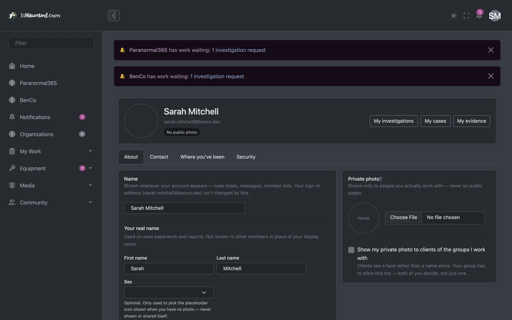
Your profile. Everything here is yours to change, and most of it is private by default.My Profile, in the menu under your avatar, is where you set your display name and photos. Your sign-in address is not changed here and is never shown publicly.
The page opens with your name and picture, then three tabs:
Most visits here are to change one thing, which is why the sections are behind tabs rather than stacked down one page. The map in particular only loads when you open its tab.
Under your name sits an optional Sex field — Male, Female, or Unspecified, and it starts blank. It exists for exactly one thing: when you have no photo, the site shows a placeholder icon, and this choice picks which of the three placeholders you get. It is never shown to anyone, never shared, and never guessed from your name; blank and Unspecified both mean the generic placeholder stands in.
You can set two pictures, and they are treated very differently.
| They are | They see it |
|---|---|
| You | Always. |
| Someone in a group with you | Yes — colleagues see each other properly. |
| A client of a case you are working | Only if your group allows it and you opted in. |
| Someone on the same case as you, as a client | Yes. |
| Anyone else | No — they see your public photo, or your initials. |
The client rule needs both keys. Your group has to allow member photos to be shown to clients, and you have to switch it on for yourself. Either one alone shares nothing, and the profile page tells you when you have opted in but no group allows it yet.
Below the photos you can record as many email addresses, phone numbers, postal addresses and web links as you like. Each one is yours alone — nobody else can add to or edit your list, and an administrator changing their own copy of your record never touches these.
Mark one email and one phone as Primary if you want a single obvious "reach me here". Marking a new one primary clears the old one automatically: it is a slot, not a checkbox you can tick twice.
Addresses are looked up on a map as you type. If the lookup finds the place, the coordinates are stored with the address; if it does not, the address still saves — it simply has no pin.
Everything you add starts private. Private means only you and the people who administer the system can see it; it is never shown on a case page, in a group directory, or to anyone you work with.
Ticking Public on one entry publishes that entry, and nothing else. A public email address is the one thing that lets somebody invite you to a calendar event by typing your address — that lookup deliberately ignores your sign-in address, so an unpublished account cannot be found by guessing.
An email address cannot be made public until you have confirmed it. That stops anyone typing a stranger's address into their own profile and then receiving that stranger's invitations.
Press Send confirmation link next to the address. If the system is set up to send mail, the link arrives in that inbox. If it is not — which is normal on a test system — the page shows you the link instead so you can copy it.
Opening the link shows the address, partly hidden, and a Confirm button. You do not have to be signed in, and you can open it on any device. The address is only confirmed when you press the button, so a mail scanner that follows links cannot confirm it for you.
Links last seven days, and you can only ask for a new one once a minute. Asking for a new link retires the old one. If you later change the address text, the confirmation is cleared and the entry goes back to private — the new address has not been proven, only the old one had.
Your profile's Where you've been tab keeps a map of the places you have actually been; the same map appears on My Investigations. Clicking a pin opens the case that visit belonged to.
It shows visits you attended — not ones you were invited to, and not ones you said yes to. A map of places you might have gone is not a record of where you have been, and only the second is worth keeping.
That means it fills up slowly, and starts empty. Attendance is recorded after the visit, so a scheduled investigation appears in your list straight away but on the map only once someone has confirmed you were there.
The profile's Security tab holds how you get into your account.
Password. Change it here whenever you like. If your account was created by signing in with Microsoft it has no password yet — the panel says so and offers Add password instead, which asks for no current password because being signed in already proves who you are. Adding one lets you sign in either way from then on; Microsoft sign-in keeps working.
Locked out entirely? Forgot your password? on the sign-in page emails you a link, and that same link is how a Microsoft-only account sets its first password.
That link can only go to a confirmed address. An account made by signing in with Microsoft starts with the address Microsoft gave us, but Microsoft does not vouch for it, so we send a confirmation link when the account is made and the profile shows a notice until you follow it — with a Send the link again button if it never arrived. Signing in with Microsoft keeps working meanwhile; what waits for the confirmation is anything we would email you, the password-reset link included.
Two-step sign-in. Optional, off unless you turn it on, and worth turning on. Scan the code with any authenticator app — Duo, Google Authenticator, Microsoft Authenticator, 1Password, Okta Verify all read the same code — and keep the recovery codes somewhere safe: they are how you get in when your phone is not to hand, and each one works once.
In the iPhone and iPad app, Profile → Delete account.
What goes: you. Your name, email address, password, phone number, addresses, photos and any sign-in methods you connected — Microsoft, Apple — are destroyed, and the account can never sign in again by any route. There is no undo, no grace period and no reactivation, and your email address is freed for somebody to register with again.
What stays: anything you wrote for a group. A case note, a report, a timeline entry or a message on a group's board belongs to that group and often to a client who paid for the work, and several of those records a group may be obliged to keep. Those stay, attributed to a former member rather than to you. Your own field sessions, recorded on your own rather than for an investigation, go with you.
If you own a group you will be asked to hand it over first, and told which groups. Exactly one owner exists per group, so leaving would strand it with nobody able to administer it or reach its billing. Make somebody else the owner, or close the group, and then your account will delete.
The files you upload, what sharing them means, and what happens when you delete one a group is using.
Media → Upload Files is every file you own: what you uploaded on the site, photos and videos you posted to the feed, evidence you attached to a case, equipment photos, and the recordings and documents your Field Kit sessions sent up. A file is yours from the moment it arrives, and it stays yours until you delete it.
Each row can be downloaded, shared, replaced or deleted.
An audio file also has a player. Right-click it and choose Open Full View for the editor: regions, a spectrogram, EVP scanning, and clips saved from what you find. See Using the Audio Editor.
Share offers a file to a group, at one of three levels — the group's administrators only, every member, or public. Sharing lends the file; it does not give it away. The group can attach it to a case, which takes a copy for the case, or copy it into its own Files. Those copies carry the file's location and camera details with them, marked as inherited.
Replace swaps in a new version of the same file and updates every case copy with it. The dialog lists the cases that hold a copy, with how many comments and votes each has, so you can see what you are about to change before you do.
Press the trash button on a row. What happens next depends on whether anyone else is using it.
Nobody else is using it. You are asked once, and it is gone — the file, its details, and any shares to individual people.
A group is using it. The dialog lists each group and what it holds: shares, copies on cases, copies in its files, and places the file itself is referenced. Then you are asked two things.
Say no to both and nothing changes. Handing a file over is a choice you make twice; it never happens on its own.
A recording that is part of a field session is held by that session — the session's document names the file and the readings point into it. Such a recording can be handed to a group, and "remove everywhere" still ends its shares and copies, but the file itself is not destroyed while the session exists; the page says so. To remove the recording, delete the whole session from My Field Sessions — see The iPhone and iPad Apps for when that is and is not allowed.
Listening closely to a recording — regions, the spectrogram, EVP scanning, clips and the case mixer.
Any audio file on the site comes with a player. Click the waveform to play it, and that is often all you need. When you want to listen properly — to find the three seconds that matter in a two-hour recording, and to keep them — right-click the player and choose Open Full View.
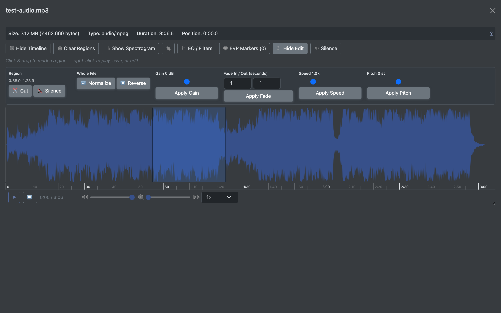
The full view: the waveform across the middle, the toolbar above it, and the panels you open from that toolbar stacked underneath.Nothing you do here changes the recording. Every edit makes a new file and leaves the original exactly as it was. That is on purpose: a recording is evidence, and evidence you have altered is worth less than evidence you have not. Everything you make is listed under Saved Clips, each one saying which part of the original it came from.
The listening tools change what you hear, not the file. The equaliser, the high-pass and low-pass filters, the compressor and the noise gate all work on the sound coming out of your speakers this moment. Turn them on to hear a whisper more clearly; the recording is not touched. The edits are the other panel, and those are the ones that produce a file.
How you set those tools up is remembered, per recording. Find the filter that lifts a voice out of a hiss and it will still be there when you come back to that file — which also means that what you are hearing on reopening is not the recording as it was captured. The panel shows what is on.
Drag across the waveform to draw a region. The edit panel shows its range, and Cut and Silence act on it.
You get one drawn region at a time — the panel names exactly one range, so drawing a second replaces the first. Everything else on the waveform stays where it is: markers, clips you have already saved, and any silence the detector has shaded. Those are not selections and an edit will never act on one.
Right-click a region for its own menu: play just that stretch, explore it in its own window, save it as a file, rename it, or remove it.
Show Spectrogram draws the recording's frequencies over time above the waveform. It is the single most useful tool for finding a voice: speech has a shape, and once you have seen a few you will pick them out of hiss far faster than you can hear them.
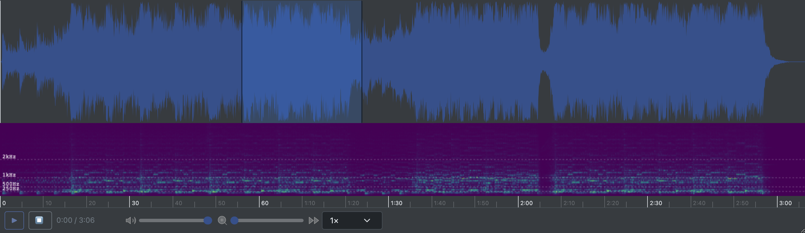
The same recording as frequencies, on the mel scale with the Viridis ramp. Most of this recording's energy sits low; a voice shows up as brighter marks in the band from a few hundred hertz upward.Three controls sit beside it:
Right-click the spectrogram to turn the frequency labels on and off.
The site remembers all of this for each recording — the spectrogram, its resolution, its colours, the mel scale, the timeline, and the whole listening chain below. Open that file again next week and it looks and sounds the way you left it. Settings are only saved for recordings that are yours; on somebody else's file you can set things up however you like, and the editor will say plainly that it is not keeping them.
Silence shades the stretches where the recording is close to quiet. It is a way of seeing where nothing is, so you can skip it — the shading is not a selection, and no edit will act on it. Adjust the threshold if a room's noise floor is being counted as sound.
The EVP Markers panel scans the recording for short bursts of speech-shaped sound and proposes them as candidates. It is looking for energy in the voice band that stands out from what surrounds it, at three sensitivities:
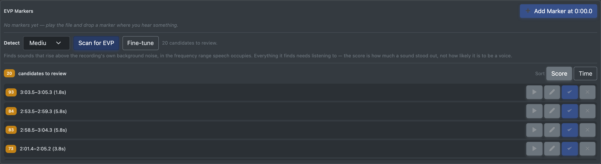
Each candidate with its score, when it happens and how long it lasts. The four buttons play it, adjust where it starts and ends, keep it, or dismiss it.A scan proposes; it never decides. Every candidate waits for you to keep it — which asks for a label, because a marker with no name is not a finding anybody can use — or dismiss it. What you dismiss is remembered, so a second scan will not propose it again, and what you keep is left alone by every later scan.
A kept marker's ▶ plays it. If the marker names a single moment rather than a stretch, you hear a couple of seconds either side of it, which is usually what you need to tell a voice from a bump.
The point of finding something is being able to hand it to somebody else. Two routes:
Either way you name it, pick a file type, and choose whether to boost the volume. Leave the boost on unless you have a reason not to: an EVP is usually far quieter than everything around it, and a clip cut at the recording's own level can be almost inaudible.
A clip cannot be made public if the recording it came from is private. If you want it shared, publish the original first — otherwise clipping would be a way around the recording's own settings, and the site will say so rather than doing it quietly.
The Edit panel makes new files from the recording:
| Edit | What it does |
|---|---|
| Cut | Removes the selected region and joins what is either side |
| Silence | Replaces the selected region with silence, keeping the length |
| Normalize | Raises the whole file so its loudest point is just under maximum |
| Gain | Makes the whole file louder or quieter by a set amount |
| Fade | Fades the start in and the end out |
| Reverse | Plays the whole file backwards |
| Speed | Changes the speed without changing the pitch |
| Pitch | Changes the pitch without changing the speed |
Cut and Silence use the region you drew. The other six are about the whole file, whatever is selected.
Edits are limited to recordings of about half an hour. A longer one is refused with a message rather than attempted, because the whole file has to be held in memory while it is worked on. Cut the part you want out first — a clip saved from a region can be edited like any other file. The EVP scan has no such limit; long recordings are what it is for.
Explore Region opens one stretch on its own, loading only that audio. Everything inside is relative to the region: the position readout, any note you attach, and any sub-region you draw. It is the right place to work on a few seconds without a two-hour waveform in the way.
Notes written here are attached to that stretch of the recording, and appear on the clip if you save one from it.
A case with several recordings has an Audio Mixer on its page: eight tracks, each with a volume, a pan, a mute and a solo. Add clips from the case's files, drag them along their lane to line them up, and press Play to hear the arrangement.
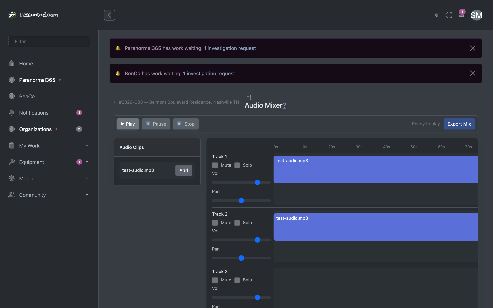
Two copies of the same recording placed on the first two tracks, each drawn at its real length. A clip whose length has never been measured is drawn dashed instead, at a placeholder width.Play is a preview and touches nothing on the server. Export Mix renders the arrangement and attaches it to the case as a new file; you need permission to add files to the case to do that, and the Mixer button only appears if you have it.
Logging the gear you own, adding photos, and what stays private.
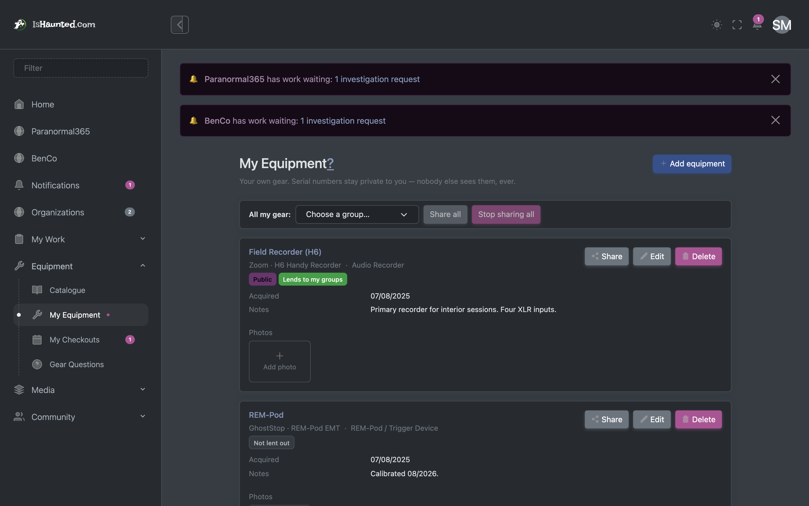
My Equipment: everything you own, whether or not anyone else can see or borrow it.My Equipment, in the main menu, is where you record the gear you own — recorders, cameras, meters, lights, anything you take on an investigation. Each piece gets a make and model from the shared catalog, a name you choose, and optionally a serial number, an acquisition date, notes and photos.
Everything starts private to you. Listing a piece publicly, sharing it with a group, and offering it for loan are all separate choices you make piece by piece.
Clicking a piece's name — anywhere it appears — opens its own page. That page shows each reader only what they are entitled to: you see its serial number and condition there, a member of a group you shared it with sees that it is yours and how to ask for it, and a passer-by from the public catalog sees the piece with no mention of you at all.
Two things about a piece of equipment are never shown to anyone but you:
Site administrators can see equipment records, as they can everywhere else in the application.
Choose a category first — that narrows the makes and models to sensible ones. Then pick the make, then the model, then give it a name you will recognise in a list, like "my backup recorder".
Not everything has a manufacturer and a product name, and you should never have to invent one.
If you add a make spelled very like one already in the catalog — Sansung when Samsung is there — we stop and ask before creating it. The catalog is shared by everybody, and one mistyped manufacturer sitting beside the real one looks exactly as genuine as the real one to whoever comes next.
You always have both answers:
We only ask about makes an administrator has already confirmed, so you are never being pointed at somebody else's typo.
Every make and model has a readable address — /equipment/zoom/h1n — so a link you paste into a
message says what it points at. If you arrive by an older link, the address bar updates itself to
the readable one.
Correcting a name corrects its address too, so a make fixed from "Sansung" to "Samsung" no longer answers to the mistake. That means a catalog link shared before a correction may stop working; the catalog is shared vocabulary, and keeping the typo alive in the URL would be the worse trade.
A make or model you added is removed automatically when the last piece of equipment using it goes away, as long as no administrator has confirmed it yet. Type a make wrongly, delete the item, and the mistake leaves with it — you do not need to ask anyone to clear it up.
Confirmed makes and models stay, whether or not anyone currently owns one. Those describe what exists in the world, not just what happens to be in the database this week.
These are two separate choices, set per piece of equipment, and both start switched off. Letting people know you own something is not the same as offering to lend it.
Who can see it. By default only you. Two ways to widen that, and they are independent:
Sharing is per piece and per group, so you can put most of your kit in front of a group and keep one piece out of it. You can only share with groups you are actually a member of.
If you have a lot of gear, the All my gear row at the top of My Equipment shares or unshares everything with one group at once. It still writes the same per-piece choices underneath, so you can immediately go and untick the one piece you would rather keep back.
A share lasts as long as your membership. If you leave a group, your gear stops appearing to it straight away — the choice is remembered, so it applies again if you rejoin.
Who can borrow it. Three options, and you can pick any combination:
| Option | Who can ask | Recorded as |
|---|---|---|
| Groups I've shared it with | A group you've shared the piece with can borrow it for the group's own use | Borrowed for that group, and optionally tied to an investigation |
| People in my groups | Someone you share a group with, borrowing as themselves | A personal loan |
| Anyone with an account | Any signed-in user | A personal loan |
Leave all three unticked and the piece is never borrowable, however many people can see it. You approve or deny every request either way, and you set how long the loan runs — or leave the due date empty if you are not worried about getting it back by a particular day.
If you allow anyone to borrow a piece but do not list it publicly, the form will say so: people outside your groups have no way to find it, so the offer does nothing until you list it.
When you stop using something, retire it rather than deleting it. Retired gear disappears from borrowing and from the public catalog, but its loans and service history stay readable — and you can put it back in service whenever you like.
Once a piece has been lent or serviced, deleting becomes unavailable for exactly that reason: removing it would take the record of what happened to it, including loans other people were part of, along with it.
A photo carries more than the picture: most phones record where and when it was taken, and which device took it. When you upload one, that information is separated out and stored against the record, and the copy anybody sees has none of it — so a photo of gear at your home does not carry your address with it.
Your original file is kept exactly as you sent it and never shown to anyone. The separated details are readable only by group Administrators and site administrators.
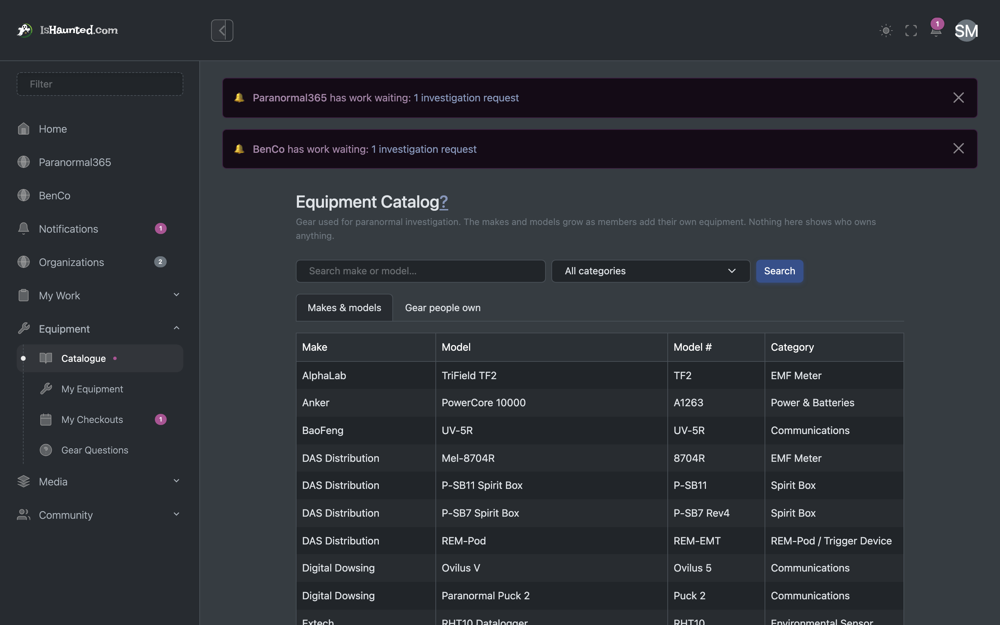
The catalog lists makes and models, and — on its second tab — the gear people have chosen to list. It never names an owner.The equipment catalogue — Equipment → Catalogue in the menu, or just Equipment if you are not signed in — is public: anyone can browse it, including visitors who are not signed in. It has two halves. Makes & models is reference data: what gear exists, by make and model. Gear people own lists individual pieces whose owners chose to list them. Neither half ever carries who owns anything or any serial number.
When you add a make or model that isn't listed yet, it goes into the catalog as a proposal. You can use it straight away on your own equipment. It appears in the public catalog once a site administrator approves it, which keeps the shared list from filling up with typos and duplicates.
Every make and model has its own page, reached by clicking the make and model under any piece of gear. It gathers what everyone who owns one has contributed: how many are owned, how many are offered for borrowing, the manufacturer links people have added, and their photos.
Everything on that page is anonymous. It never says whose photo is whose, or who owns how many. Where you see a photo you can click, that is because you are allowed to open that particular piece — its owner listed it publicly, shared it with a group you are in, or it is your own. Everyone else sees the same photo with no link behind it.
Each piece of equipment can carry a link to the maker's own page for it. It is optional, and the links everyone adds for the same make and model are gathered on that model's page — so one person's research into a recorder's specifications saves the next person the search.
Each item can have as many photos as you like. The first one you add becomes the main photo — the one shown first — and you can promote any other photo to main, or remove any of them.
Photos load when you open your equipment list, not as thumbnails in a long grid, so a list of many items stays quick.
Hide from the model page is set on each photo separately. A photo of the piece against a plain wall may be exactly what belongs on a make and model page, while the one taken in your living room is not — so the choice is per photo rather than all-or-nothing. Hiding a photo keeps it on the item itself; it only stops it appearing in the pooled set. Captions you write are shown publicly with the photo, so write them as something a stranger will read.
Two related things, one public and one private.
Things worth knowing is the FAQ you write about your own piece — anything a borrower would want to know before asking for it. It appears on the item's page, and entries from publicly-listed items are also gathered on that make and model's page alongside other owners'. FAQ entries never say who wrote them, anywhere, including on your own item's page.
Questions are asked by someone thinking about borrowing. They arrive in Gear Questions in the main menu, where you can answer, or decline without answering, and afterwards publish a good answer into the FAQ.
A question is anonymous in both directions. You will not see who asked. They will not see who answered. The notice announcing a question says only that one arrived.
This is deliberate: a question is how someone finds out whether a thing has a quirk they need to know about, and people do not ask that of a person whose answer might decide whether they get lent the gear at all.
The anonymity covers questions and FAQs only. Borrowing is not anonymous — if that same person goes on to ask for the piece, you will each see who the other is, because you should know who is holding your recorder. A group's shared-gear list still names owners too.
Publishing an answer to the FAQ copies the text rather than exposing the conversation. You can rewrite it first — what reads well as a reply to one person rarely reads well as a public answer — and the original thread is left as it was said. An answer can be published once.
After a loan comes back, both sides can leave feedback about the other. Neither ever sees what was written about them — not on any page, and there is no notification, because telling someone feedback about them exists is most of the way to showing it to them. What lenders write is shown to future lenders deciding that person's next request; what borrowers write is shown, unattributed, to other borrowers considering asking. The full rules are in Borrowing Equipment.
A group's Administrators and Owner get an Equipment feedback link on the group's Equipment tab; nobody else is shown it, because nobody else can open the page. It lists everything left about the group's gear and its members' loans, naming both sides, and anything that crosses a line can be removed. That page exists so a complaint can be acted on — it is the one place in the app where feedback is attributed on both ends.
Each piece counts how many times its page has been opened and how many times someone followed its manufacturer link. Those numbers are shown to the Administrators and Owner of the group that owns the equipment, and to site administrators. Nobody else sees them — not other members, and not the individual owner of a personal piece.
The counts are totals only. Nothing is recorded about who did the looking.
Asking to borrow gear, handing it over, and getting it back.
Equipment can be borrowed from two places: gear a group owns, and gear a member owns personally and has offered to lend. The steps are the same either way. What differs is who decides.
| Whose gear | Who approves |
|---|---|
| The group's own | Anyone with the group's Equipment Checkouts permission |
| A member's own | That member, always |
Nobody's group permission lets them lend out somebody else's personal equipment. If it is yours, the decision is yours.
Find the piece and choose Ask to borrow. Gear turns up in two places: your group's Equipment tab, and the public equipment catalogue — Equipment → Catalogue in the menu — under Gear people own.
If the owner lends the piece to more than one group you are in, you will be asked who you are borrowing it for. That choice matters: a loan taken out for a group is recorded against that group, and can be tied to a particular visit. A loan you take out personally is just yours.
If the owner only lends the piece personally, there is nothing to choose and no group is recorded.
You can add when you need it and a note about why. Neither is required, but a note is the difference between a request somebody can say yes to and one they have to ask about first.
You can only have one open request per piece at a time. Asking twice is a duplicate, not a nudge.
Every piece has its own page, reached by clicking its name. On it you will find Things worth knowing — an FAQ the owner has written — and an Ask a question button if there is something they have not covered.
Questions are anonymous in both directions. Whoever looks after the piece sees your question but not your name, and their answer comes back without theirs. Ask whatever you actually need to know: this exists precisely so that finding out about a temperamental battery door does not cost you the loan.
Anonymity stops at the question. If you go on to ask to borrow, that request carries your name, as it must — you are asking someone to hand you their equipment.
Your questions and their answers are in Gear Questions in the main menu.
Whoever declines has to give a reason, and you will see it. A bare "no" tells you nothing about whether to ask again next week.
A declined request is final — the row stays as a record of what was asked. If circumstances change, send a fresh request.
Each side confirms the transfer coming toward them.
Until you confirm the hand-off you can still cancel — plans change, and an approved request you never collected should not have to become a loan.
Whoever approves can set a date it is due back, or leave it open if they are not worried.
A loan is overdue once it is out and past that date. That is worked out fresh every time anyone looks, so it is never stale, and it shows as a red badge on My Checkouts and a count on your notification bell.
Either side can attach photos to a loan — as the gear goes out, and as it comes back. They sit side by side on the loan's Details view, which is the whole point: "was that scratch already there?" is much easier to answer with the two pictures next to each other than from memory.
A hand-off photo can only be added once the loan is approved and before it is over, and a return photo only once the gear is actually out or just back. Photographing a hand-off that never happened would be recording a fact about nothing.
Condition photos are private to the two sides of that loan. They never appear in the public catalog.
If you need a piece for longer, open the loan's Details and ask to keep it until a later date. You can only ask while you actually have the gear, and only one request can be waiting at a time.
Whoever lent it can grant or refuse. Granting moves the due date; refusing leaves the original date standing and needs a reason. Either way you get a notification, and the request and its answer stay on the loan — so "asked for another week, was given three days" is still readable later, rather than just a due date that quietly changed.
Once a piece is back, both sides can leave feedback on the loan's page. It is optional, and you can leave a comment, a rating out of five, or both.
Neither side ever sees what was written about them. There is no notification either, because telling someone that feedback about them exists is most of the way to showing it to them. What each half is for:
Borrowers can also review the equipment itself, separately. That one is public: it appears on the make and model's catalog page, still without your name, and helps somebody deciding whether the thing is worth buying or borrowing at all.
Averages are never shown from fewer than three ratings, and always appear with their count beside them — one sour rating is one voice, not a verdict.
A group's Administrators and Owner can see everything left about their group's gear and loans, and remove anything that crosses a line.
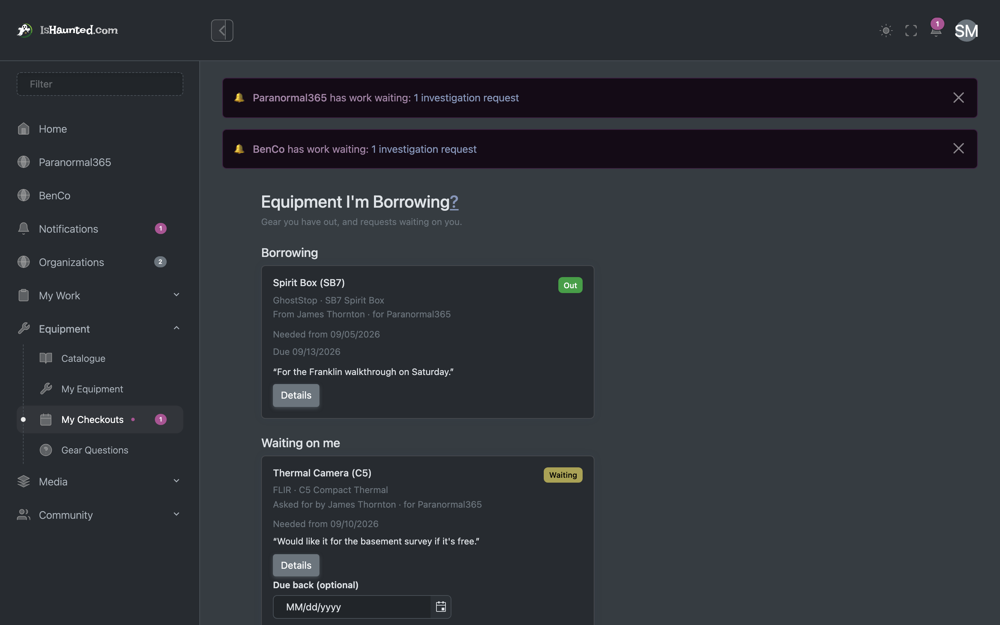
Both directions in one place: what you have out, and what someone has asked you for.My Checkouts answers three questions in one place:
Groups with the Equipment Checkouts permission also get a queue of every loan of the group's gear, on the group's own Equipment tab.
Turning raw footage into something worth watching — import, trim, title, and export.
The video editor puts a full editing suite in your browser. Nothing is uploaded while you work: your footage is downloaded to your own machine, edited there, and rendered there. Only the finished video goes back to the server, and only if you ask it to.
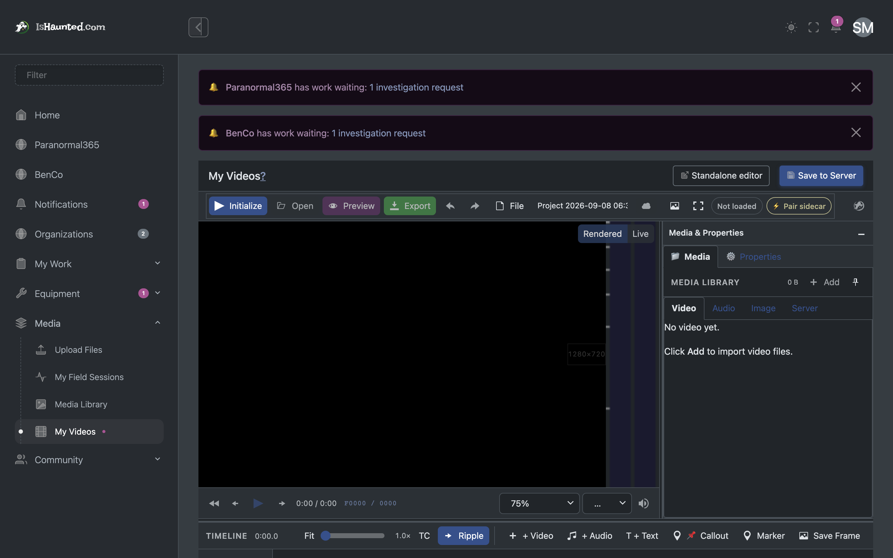
The editor: the picture at the top, the timeline below it, and media and properties in the panel on the right.The three parts are yours to size. Drag the seam above the timeline to give the timeline more room or hand it back to the picture; drag the panel's left edge to widen it; collapse the panel with the button in its header and bring it back from the toolbar. The editor remembers all of it for next time.
There is also a standalone editor that runs on its own, at ishaunted.com/editors/video. It is the same editor with the same features — multiple tracks, titles, transitions, effects, saved projects and all — and it keeps your footage even further from the server: media goes straight from the site to your machine without passing through the web server at all. Sign in there, from the button in its toolbar, and it lists your uploaded media, saves projects to the server and publishes finished renders just as the site does. The one difference worth knowing is what happens before you sign in: see Working signed out below.
Standalone editor on the My Videos page takes you there without signing in again. The link carries a one-use pass that is good for a minute and never leaves your browser's address bar, and the editor spends it as it opens. If the project you had open was saved to the server, it opens there too. Nothing else travels: the standalone editor gets a sign-in of its own rather than a copy of the one you are using here.
The first thing to press is Initialize. The editor does its video work with a copy of ffmpeg that runs inside the browser, and that engine is a large download — so it is not fetched until you say so. Opening a project to look at it costs nothing; editing needs the engine.
The chip beside the toolbar tells you where it is up to: Not loaded, then Loading ffmpeg…, then Ready. Import, preview and export all wait for Ready.
Once it says Ready the Initialize button goes away — it has done its one job, and the space goes to the tools you will actually use. It comes back if the engine ever fails, which is the one case where pressing it again is the right move.
Everything you bring in lands in the Media panel first. That is your material for this project, and it is not the same thing as your edit: a clip sits there whether or not it is on the timeline, and the card tells you which — on timeline, or on timeline ×2 if you have used it twice. A card that reads media missing is one whose file is no longer in this browser's storage; see Where your footage lives.
Press + on a card to place it at the playhead. The same source can be placed as many times as you like, and trimming one placement leaves the others alone. Remove from media takes the card away; anything already on the timeline stays exactly as it is.
The one shortcut: the first thing you bring into an empty project is placed for you, because nobody picks a video and then wants to look at an empty timeline.
There are two ways in.
From your machine — the Open button takes files straight off your disk. Nothing about them touches the server.
From the server — the Server tab lists media you already have on the site: your own uploads, and anything shared with you through a group or a case.
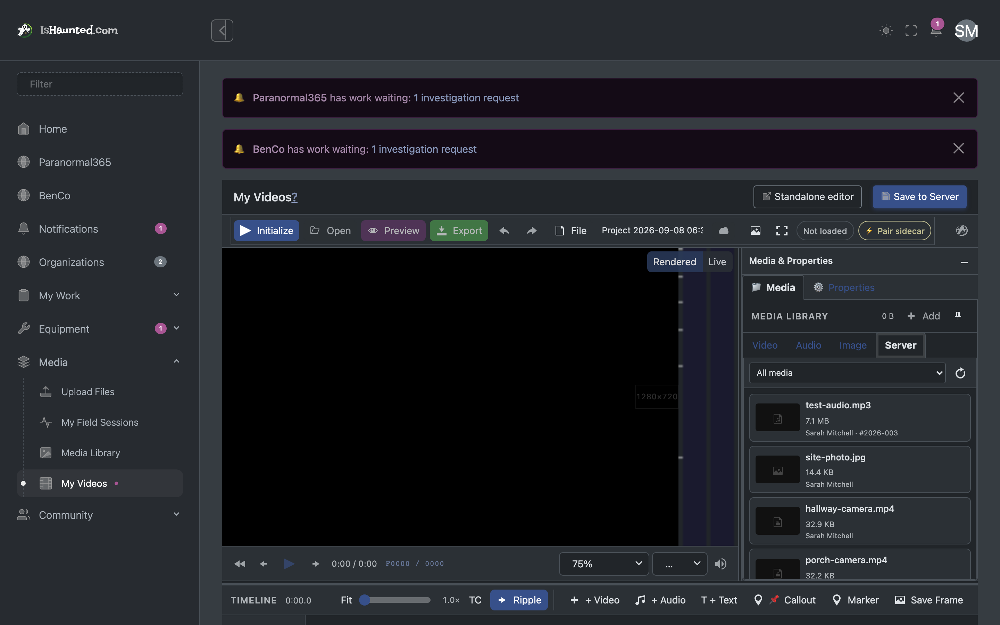
Everything you can reach, with its size. Clicking a file downloads it to this browser.Importing shows a row per file, and each row can be cancelled while it is still working.
The list above the files narrows what the tab shows:
| What you get | |
|---|---|
| All media | Everything you can reach — your uploads, and anything shared with you. |
| My files | Only what you uploaded yourself. |
| By case | One case's media. A second list appears; pick the case. |
Each row says whose file it is, and which case it belongs to when it belongs to one. Two people can easily upload a recording with the same name, and on All media you are looking at everybody's at once.
Picking a case that had more than one visit adds a third list, so you can narrow to a single night's material rather than everything the case has ever produced. Leave it on The whole case to see all of it.
The scope only ever narrows what you could already see. It is not a way of reaching somebody else's footage, and choosing a case you have no part in shows nothing rather than refusing.
The list is fetched once. If you upload something elsewhere while the editor is open, press the refresh button beside the scope lists to fetch it again. A render you publish from here refreshes the list on its own.
Bringing a file over is deliberately two clicks:
The split exists because downloading a large file and committing it to your edit are different decisions. You can pull several files down while you think, and place them later.
If your editor has audio tracks switched off, an audio file still arrives in the Audio bin and the import row says why it was not placed. It is there for whenever you want it.
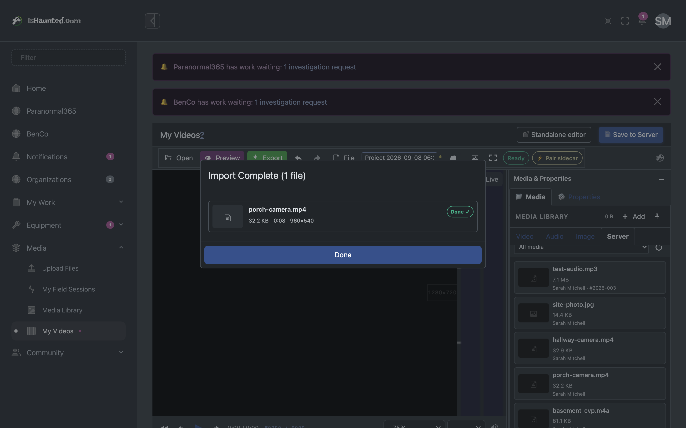
Each import reports what it found — length and frame size — and waits for you to dismiss it.The editor keeps your footage in the browser's own storage, and everything it does to your video it does on your own machine. Both have limits, and they are worth knowing before you plan a long edit.
Measured on a 2026 MacBook Pro in Chrome, on a timeline of a few clips:
| What happened | |
|---|---|
| Storage the browser offered | About 6 GB |
| A 284 MB clip | Imported in about 50 seconds, stored at its original size |
| A 348 MB clip | Imported in about a minute, stored at its original size |
| Rebuilding the preview after adding one | About a minute |
| Switching that timeline to Live | About 3 seconds |
Three things follow from this.
Footage is stored at full size. A file you import takes as much room as the file itself, so the 6 GB figure is roughly how much footage a project can hold before the browser starts refusing. The Media panel shows what you have used.
Waiting is proportional to what you feed it. Each edit rebuilds the rendered preview, and at a few hundred megabytes that is around a minute. This is what Live is for while you are cutting: it plays your footage directly and is ready in seconds regardless of file size.
Beyond this, use the sidecar. The browser's video engine works in a memory space of its own, and very large or very long material is where it gives out. The native helper runs the same work outside the browser, with your machine's full memory and all of its cores.
If a file is simply too big to bring in, trimming it first in any tool that can cut without re-encoding will get you the part you want at a fraction of the size.
If a clip would land where something already sits, the editor asks rather than guessing:
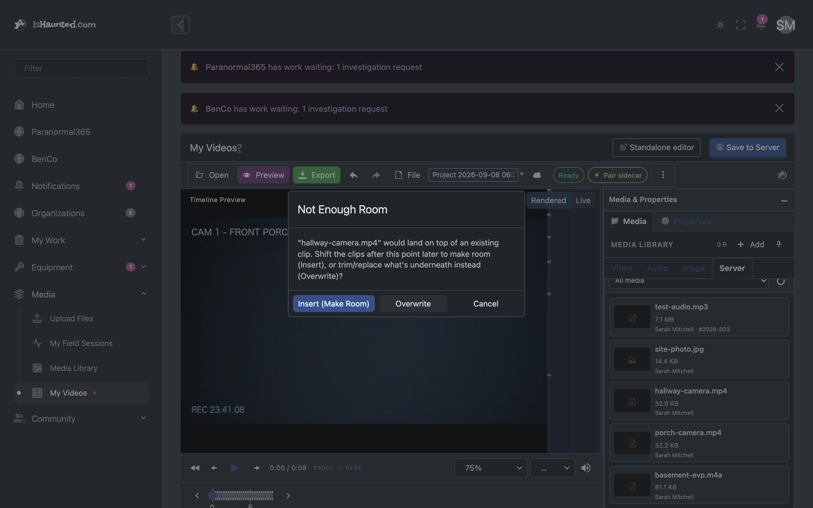
Insert pushes what is already there along. Overwrite replaces the part that overlaps.Insert (Make Room) is the safe answer: nothing is lost, everything after the insertion point shifts later. Overwrite is what you want when you are deliberately replacing a section.
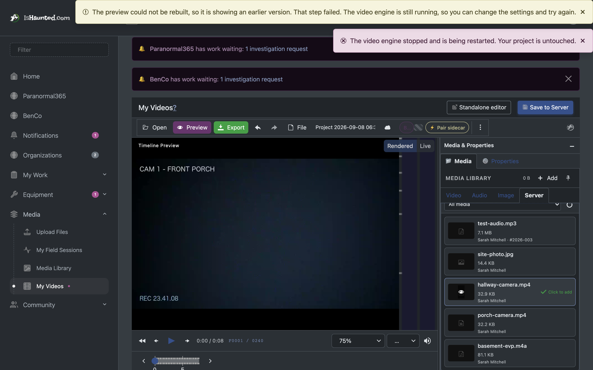
Two camera angles, one after the other. The pink line is the playhead.Most of the timeline can be driven from the keyboard, and the full list is in the editor itself: File → Keyboard shortcuts, or press ?.
The ones worth knowing straight away:
| Key | Does |
|---|---|
| Space | Play or pause |
| ← / → | Step one frame back or forward |
| Home / End | Jump to the start or the end |
| S | Split the selected clip at the playhead |
| M | Drop a marker at the playhead |
| Ctrl/⌘ + D | Duplicate what is selected, clips and annotations alike |
| Delete | Remove what is selected |
| Ctrl/⌘ + Z | Undo (Shift as well to redo) |
| Escape | Clear the selection |
On a Mac, ⌘ works everywhere Ctrl does.
With a title, callout or piece of clip art selected, the arrow keys nudge it around the frame instead of stepping frames.
Marker drops a labelled point at the playhead. Markers are for you and anyone reviewing with you — a way to say "here" without cutting anything. They travel with the project.
Save Frame writes the picture under the playhead to your machine as a PNG. It comes from the clip's own footage at full resolution rather than from the preview, so it is as sharp as the source allows — and it does not carry your titles or callouts, which is usually what you want from a frame you are going to share as evidence.
Select a clip and the panel's Properties tab describes it.
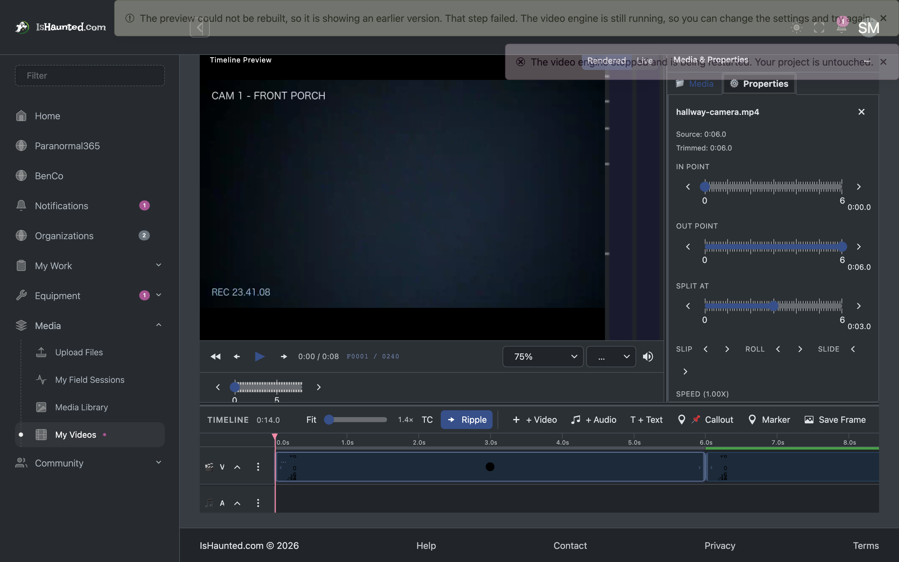
Trim, speed, volume, split and delete, all for the selected clip.A clip often has one thing in it that cannot go out: a face, a number plate, the house number by the door. Hide an area covers a rectangle of the picture with a blur or a mosaic, so the rest of the clip can still be used.
Areas are drawn on the clip, so they travel with it if you move or trim it, and the preview shows each one where the finished video will obscure it. The marker in the preview has a dashed edge to say it is an editing marker: the browser's blur is not the one the render uses, and the render's is stronger.
An area is measured as a share of the frame rather than in pixels, so it still covers the same thing if you export at a different resolution. If an area is somehow too small to render, the export says so in its warnings rather than quietly leaving it out — check the picture before sharing it.
By default a clip fills the frame. Place this clip lets you say otherwise:
The picture keeps its own proportions inside whatever box you give it, so placing a clip never stretches it.
Audio clips sit on their own tracks below the picture and behave like everything else on the timeline: drag one to move it, drag its edges to trim it, and the shape drawn on the chip is the part of the recording that clip actually plays.
Select a sound and the Properties tab offers:
A recording made in a house at two in the morning is mostly room tone, fridge hum and the recorder's own noise floor.
Both are applied when the video is rendered, not to the file you imported, so nothing is lost and you can change your mind.
Music and room tone are usually set at a level chosen for the stretches with nobody talking, and the moment a voice comes in they are too loud.
Open an audio track's menu and choose Duck others under this. Everything else — including the picture's own sound — drops in level whenever that track is playing and returns when it stops. It is the alternative to drawing a volume envelope around every line by hand and redrawing it whenever the timing moves.
Right-click a video clip and choose Separate Audio to put its sound on its own track, where it can be trimmed and moved independently. The new clip carries the trim, the speed and the level the picture had, so it starts out lined up exactly as it was.
The timeline can hold more than one video track. A clip on a track above the first plays over the one beneath it for as long as it runs, and everything on the timeline — the gaps included — keeps its place in the finished file. If you leave a gap between two clips, the export holds on black for exactly that long, the same as the timeline shows.
Titles, callouts and clip art stack in the order you added them, whatever kind each one is: the newest sits on top, and that is how it renders.
+ Text adds a title. It gets its own chip on the timeline, so its timing is edited exactly like a clip's — drag it to move it, drag its edges to change how long it shows.
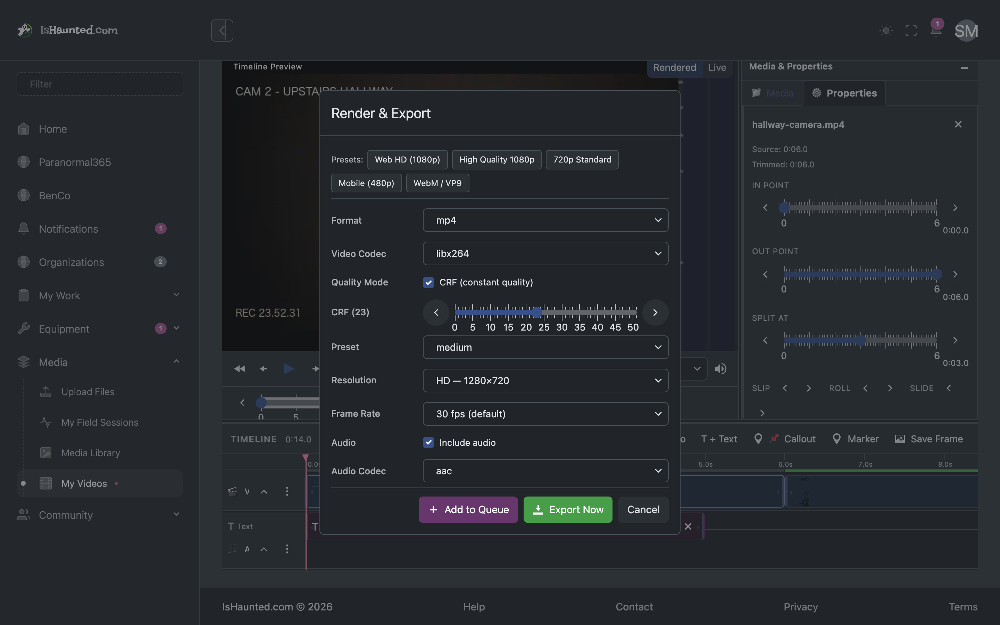
A title is a clip like any other: it starts and ends where you put it.Callout adds a shape — rectangle, ellipse, arrow — for pointing at something in the frame. Callouts can be moved, resized and rotated, and their movement can be animated over time.
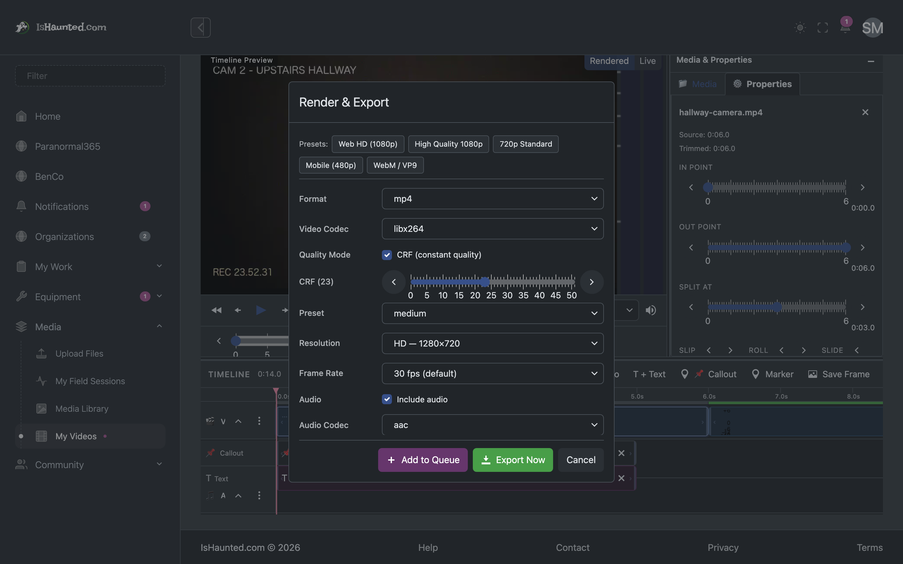
Callouts are for drawing attention to a spot in the picture.Both take colour, font and border settings from the properties panel, and both can move across the frame while they are on screen. Every change is made as you make it and every one can be undone, including the words themselves — there is no separate Apply step.
A title runs on one line unless you tell it not to. Wrap long lines breaks it at a width you choose, which is easier than typing the breaks yourself and survives a change of font size.
Right-click any clip, title, callout or piece of artwork and choose Duplicate, or press Ctrl/⌘ + D, to make another one just like it. The copy lands just after the original and is entirely separate, so editing one leaves the other alone — which is how you make three matching callouts without building each from scratch.
Preview renders the real thing at full quality in a window of its own on the page, so you can check the finished result before committing to it. It can be stopped at any point, and if it stops reporting progress the window says so and offers to restart the video engine.
Meanwhile the editor keeps its own rough preview up to date in the background as you work — which is why the status chip sometimes says it is busy shortly after an edit. That preview keeps your place: it carries on from where you were rather than jumping back to the start after every change, and it plays your audio tracks, so you can hear how the music sits against the picture while you are still editing.
Above the picture is a choice between two ways of watching your timeline, and they answer different questions.
Rendered is that background preview: the editor makes a small video of your whole timeline and plays it. It shows everything — transitions, effects, titles, callouts — because it is made the same way the export is. It takes a moment to catch up after each edit, and on a long timeline that moment gets longer.
Live plays your footage itself, cutting between the original files as the playhead crosses them. A cut you just made is there immediately, with nothing to wait for, which is what you want while you are actually cutting. It plays the picture and the sound and nothing else: transitions appear as plain cuts, and effects, titles and callouts are not drawn. A clip whose media is not on this computer plays as black, and the player says how many.
Use Live to cut, and Rendered to check. Export always matches Rendered.
The video engine runs inside the browser and can occasionally stop — most often on a very large file. When it does, the status chip says so and a Restart engine button appears beside it. Your project is untouched; only the step that was in progress is lost. The editor usually restarts it for you.
If the message says the file is more than the browser can hold, restarting will not help: that is a limit of the browser itself. Use a shorter selection, a smaller export resolution, or the native helper described below, which does not have the limit.
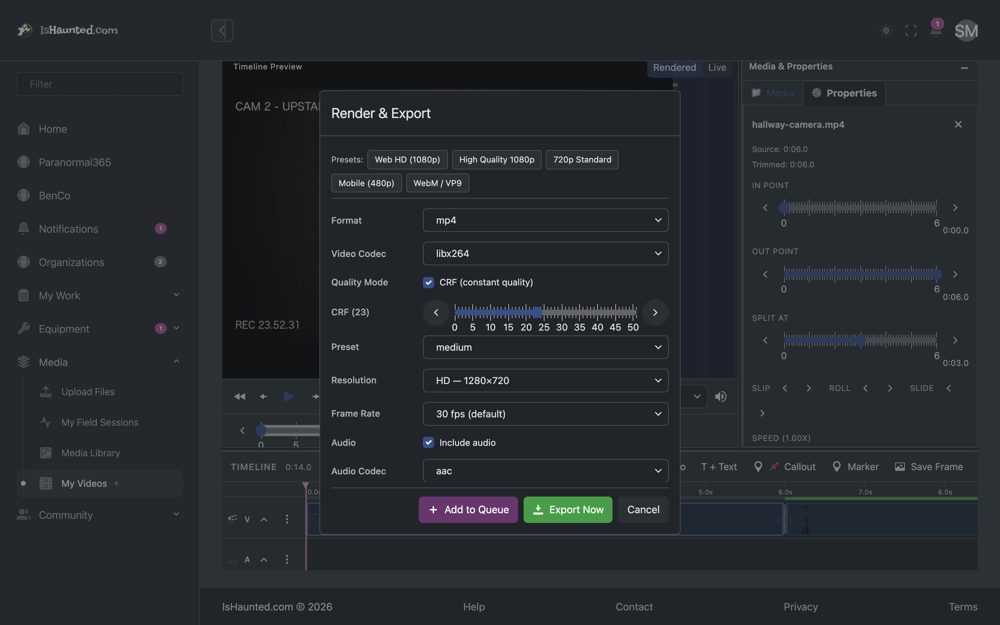
Presets for the common cases, and every setting underneath them if you want it.Export renders the final video. Start from a preset — Web HD, High Quality, 720p, Mobile or WebM — and adjust only what you care about: format, codec, quality, resolution and frame rate. Export Now renders immediately; Add to Queue lines it up so you can keep working, including while another export is already running.
A few of those settings are worth knowing:
If something on the timeline could not be included — a clip whose media is not loaded, a piece of artwork that could not be read — the export still finishes and tells you what it left out. Read that list before you share the file.
You choose where the result goes:
Closing that question without answering it asks whether you meant to throw the render away. Nothing is deleted unless you say so.
Rendering is real work. A short project finishes quickly; a long one with overlays takes minutes, and both are faster with the native helper below.
Everything above runs inside the browser's sandbox, which is safe but slow: it renders on one processor core and inside a memory ceiling the browser sets, which is what makes a long project crawl.
The Sidecar is a small application you install on your own computer to lift both limits. When it is running, the editor hands the heavy work — decoding, rendering, exporting — to it instead of doing it in the browser tab, where it can use all of your processor's cores and is not bound by the browser's memory ceiling. The result is the same video, produced considerably faster.
Titles, callouts, artwork, transitions and hidden areas are still drawn in the browser even with a sidecar running. Those are quick; it is the decoding and encoding that is slow, and that is what moves across.
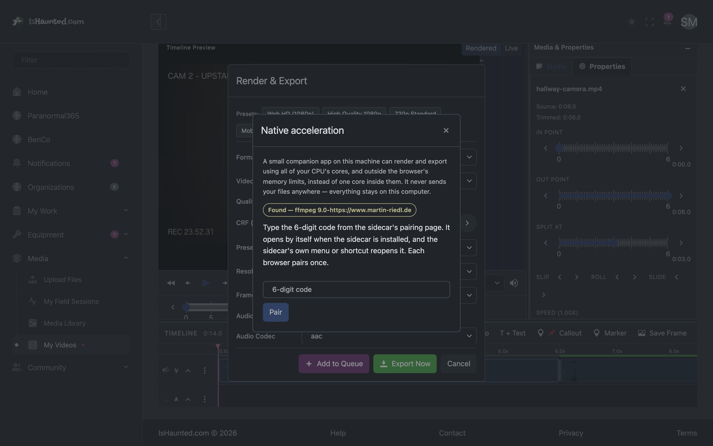
The panel behind the toolbar chip: whether a helper is installed, and whether this browser is paired with it.It is entirely optional. With no Sidecar installed, everything still works — the editor uses the in-browser engine, exactly as it does now.
The chip on the toolbar tells you the state at a glance: No sidecar (none found), Pair sidecar (found, not yet paired) or Native (paired and in use).
Why a code at all. The Sidecar listens only on your own machine, and it refuses to take work from a page until that page has proved it is one you are actually using. The code is how you say so. It is single-use and expires after ten minutes, and pairing one browser does not unpair another.
Pairing is per browser and per site address. Editing from a different browser, or reaching the site by a different address, means pairing once more.
The editor saves the project for you, a couple of seconds after you stop editing. You do not have
to think about it, and the name at the top of the toolbar carries a * while there is anything not
yet written. If you close the tab with unsaved work, or with a render still going, the browser asks
before letting you.
Save to Server stores the project — the arrangement, the trims, the titles, all of it — under your account, so you can pick it up on another machine. Saved Projects lists what you have.
A project is not the video. It is the recipe: which clips, in what order, cut where. The video itself only exists once you export.
Everything you import is copied into the browser's own storage, which is what lets you reopen a project and find the clips still there. The media panel shows how much of that storage is in use.
When the editor starts it clears out any footage no project is using any more, so deleting a project eventually gives the space back. It only does this once it can see the full list of projects, so nothing is removed on a guess.
A clip you brought over from the Server tab remembers which file it came from, so opening that project on another machine, or in another browser, fetches the footage back on its own. Small downloads just happen. Anything larger than about 50 MB asks first, and Later is a real answer: the project still opens, and the clips wait.
Two things it will not do. A clip you imported straight off your own machine cannot be fetched back, because that file only exists where you put it. And if the file on the server has been replaced since you saved the project, the clip stays missing rather than being quietly relinked to different footage — editing against the wrong material is worse than a clip that says it has none.
For either of those, right-click the clip and choose Replace Media… to point it at the file yourself. The replacement is kept, so it is still there the next time you open the project.
A clip whose footage is missing stays on the timeline with all its trims, titles and edits intact, marked with a warning triangle.
It also stops the export, and says so. Open the export window and the reason is the first thing in it, naming the clips: the editor will not render a video with a hole where that footage should be, so Export Now and Add to Queue stay switched off until you reconnect the clip or remove it. That is deliberate — an export that started anyway would reach the missing clip partway through and stall there, with a progress bar that had stopped meaning anything.
The standalone editor can be used without signing in, and quite a lot works that way: open files from your machine, edit them, render the result and save it back to your machine. All of that is local.
Signing in is what connects it to the site. The button is in the toolbar, at the right-hand end. Until you use it:
So: edit locally as much as you like, sign in when you want your own footage or want to keep the result somewhere other than this computer. If your sign-in expires part-way through, the editor says so and keeps the render — signing in again and uploading once more is the whole fix.
Settings, members, requests, and the decisions only owners and administrators make.
Visible to owners and administrators of a group. Managers and members work cases but do not configure the group itself.
Everything a group can configure lives on the Settings tab, and there is a lot of it: billing, promotion, feed attribution, address display, media privacy, the kind of group you are, walking tours, the role new members start on, calendar event types, member titles, investigation duties and the duty eligibility matrix.
The row of buttons at the top of the tab jumps to each of those in turn. Nothing is hidden behind them — the whole page is still one page you can read top to bottom — they are there so you can find out in one glance whether the thing you came to change is on this screen, and go straight to it if it is.
The group's Edit screen — the button beside the group's name, not the Settings tab — holds its public identity: name, URL, contact details, and two switches worth understanding.
Accepting membership applications controls whether people can apply to join.
Your group lives at /o/your-address — the link you put on a card, in a post, or in an email to a
client. It can use lowercase letters, numbers and hyphens, like ghost-squad. Spaces, slashes and
punctuation are refused, and a handful of words the site uses itself are reserved.
No two groups can share an address, and you can change yours whenever you like. When you do:
So changing your address is safe. Changing it often is still worth avoiding, because the address is what people remember.
Let clients see members' private photos is one half of a two-key rule. Turning it on shares nothing by itself; it only permits members who have also opted in on their own profile. This is deliberate: a group cannot volunteer its members' faces, and a member cannot overrule a group that has decided its people stay unidentified to clients.
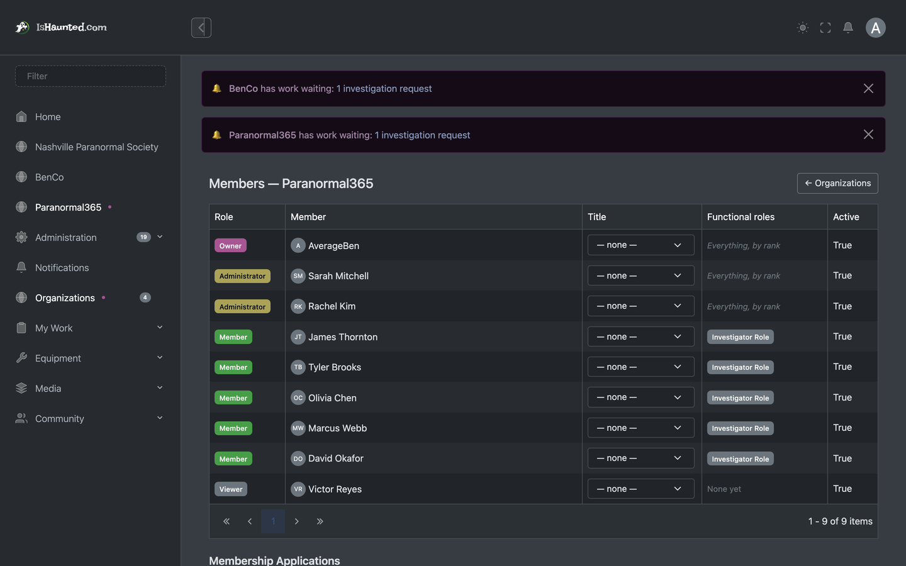
Members and their roles. Roles decide what each person may do inside the group.| Role | Typically |
|---|---|
| Owner | Created the group. Full control. |
| Administrator | Configures the group and manages members. |
| Manager | Runs cases day to day. |
| Member | Works cases and attends investigations. |
| Viewer | Reads without changing anything. |
Every group begins with seven ready-made roles — Case Manager Role, Equipment Manager Role, CMS Manager Role, Client Manager Role, Content Manager Role, Historian Role, Secretary Role — each a starting point you can edit, rename, or delete like any role you build yourself. The "Role" suffix is deliberate: member titles (the ladder below) say how senior somebody is, roles say what they may do, and the naming keeps the two impossible to confuse.
Every group also has an Investigator Role — read the group's cases and investigations — which is the one an ordinary member needs to do anything at all.
Settings → New members start as decides which role somebody is given the moment they join, whether you added them yourself or accepted their application. A new group starts on Investigator Role, which is what lets a member open the cases they are put on.
This matters more than it sounds. A membership rank alone opens nothing below Administrator: a Manager, Member or Viewer with no role can be named on a visit roster and see the group's cases listed on their desk, and every one of those links will refuse them. Owners and administrators are skipped, because their rank already opens everything.
You can set it to Nothing and hand out roles yourself. Groups that existed before this setting arrived have it set to nothing, so nothing changed for them.
Changing it applies to people who join from then on. It never reaches back into your existing roster — a setting that silently re-permissioned everybody would be a worse surprise than the one it prevents. To change what somebody already has, use their entry on the Members screen.
Since the enforcement flip: reading the group's cases and investigations follows role grants, not bare membership. Everyone who was already an ordinary member when the flip arrived holds the Investigator Role and noticed nothing; a member without any case-reading role no longer sees the Cases and Investigations tabs at all — the tabs and the server give the same answer. Owners and administrators always see everything.
Three of the role editor's sections started doing real work with the roles arc's Phase B: Cases (creating a case, and editing one you don't manage), Client Requests (accepting or declining what clients send in), and Calendar (event types, and managing other people's attendance). Each is strictly additive: owners and administrators keep everything they had, and a role grant now opens the same doors for the members who hold it. Nothing was taken from anyone — the grants only add. The remaining sections' grants become decisive as the later phases land; each section's own description says where it stands.
When a client's investigation request or a membership application is waiting on your group, a banner appears under the site-wide announcement on every page — for you and anyone else whose permissions let them open that queue, and for nobody else. Each banner names the group and the waiting count and links straight to the tab where you act. Dismissing one keeps it away for the rest of your session; a new arrival brings it back.
A group is free by having no plan at all, not by being on a free one. There is no such thing as a free group plan: an individual can be free, a group cannot.
With no plan a group can do public work — public cases, public investigations, results anyone can read. A plan is what lets it work with other people, take private-residence and client cases, and keep its own sessions to itself.
The price is set by how many members the group has, and the Billing screen under Settings shows the band you are in and what it costs. If the price list has no charge for a group your size, that screen says there is nothing to buy rather than offering you a plan for nothing.
Each subscription plan includes custom-role permissions for a set of areas — cases, calendar, files, and so on — and the Pricing page lists exactly which areas each plan includes, so what an upgrade buys is never a surprise. Most plans include everything; when yours excludes an area, the role editor says so rather than hiding it:
When an administrator changes what a plan includes, groups on that plan are told: newly included areas are announced right away, and removals arrive as a notice — before the renewal that applies them for paid groups. Owners and group administrators are unaffected by area exclusions, exactly as they are unaffected by role grants: they always hold every permission.
Separate from roles, on purpose: a title says how senior somebody is in the group — a role says what they may do. The two never mix. Giving somebody a grander title changes nothing about what they can access, and a brand-new member with the right role can do things a ten-year veteran without it cannot.
Every group starts with the same five-rung ladder — Probationary, Junior Investigator, Investigator, Senior Investigator, Lead Investigator — and it is entirely yours to change: rename rungs, reorder them, add your own, or delete the ones you will never use, all under Settings → Member titles. Deleting a title simply clears it from anyone holding it; nobody loses any access, because titles never granted any.
Assign titles from the Members tab — each row has a title dropdown if you administer the group. A member's title shows as a badge beside their name on the roster. Someone who belongs to two groups holds a separate title in each, which is exactly how it should be: seniority is earned per group.
Under Settings → Investigation duties lives the list of jobs your group hands out per visit — every group starts with Lead Investigator, Equipment, Equipment Assist, Evidence Collection and Documentation, and the list is yours: rename, add, retire. A duty marked one holder (like the lead) can only be held by a single person per visit; assigning it to someone takes it from the previous holder.
Equipment comes as two jobs on purpose. Assisting with the gear is something a newer member can do long before they are the one running it, and one combined duty cannot say that.
Under the duty list sits the grid: your titles across the top, your duties down the side. Tick the titles each duty is open to. A new group starts with this filled in — an Associate can document and assist with equipment, a Junior Investigator adds evidence collection, an Investigator runs the equipment, and the Lead Investigator duty is open to your two most senior rungs.
The ask stays deliberately soft. Whoever manages a visit can assign past it with an explicit Assign anyway, and the exception is marked on the assignment — the senior calls in sick and the capable junior steps up, and a hard wall would just send the group back to organising by text message.
Two exceptions to that.
A duty that carries something under On the night takes an owner or administrator to assign past. Handing somebody point of contact, or the right to hand out the other duties, is a different act from handing them a label, and the person given it could then make exceptions of their own. Whoever is running the visit can still assign it to anybody the duty is already open to; it is only the exception that needs the extra pair of hands.
Tick no exceptions on the few duties where the title is a real qualification rather than a preference — certified equipment, or being the client's point of contact inside their home. Then nobody can assign past it on the night, not even an owner. The way to change it is to change this grid, which is a deliberate and visible act rather than a decision taken at nine o'clock at a site.
A duty whose row is untouched says so, and falls back to the older minimum title setting on the duty itself — "asks for Investigator or above". That is the single-threshold version of the same idea, and nothing changed for groups that were already using it.
Two of the columns are not about who may hold the duty but about what holding it lets somebody do, for that one visit only:
Both end when the visit does. Duties still grant no standing permissions: what somebody may do in the group as a whole is decided by roles, under Roles & permissions, and a duty can only ever open a door that the roles left shut for this one night. It can never close one.
Every visit the group has run, mapped and listed, including ones that belong to no client case. It is visible to every member, not only administrators — knowing where the group has worked is ordinary team knowledge, not an administrative secret.
Schedule an investigation books a visit with no case behind it. What the group finds there is shared under the same rules as any other investigation.
Being a member is enough to read an investigation and to answer for yourself — your own RSVP and your own arrival. Changing the record itself is narrower. Any one of these is enough:
That last one is the lever you have as an administrator. Grant a role the Update action on Investigation, give somebody that role, and they can edit any of the group's investigations without being made an administrator of everything else.
Leading a visit is not a rank. It is set per investigation, in the Lead column of the investigation's team list, and it ends with that visit. One person leads at a time — naming a lead takes it from whoever held it — and the current lead can hand it on, which is what happens when somebody leaves halfway through the night. Somebody senior enough to lead every visit is better served by the permission above; somebody leading one Saturday is better served by the lead flag, which stops mattering on Sunday.
A client looking for help searches by where they are. Your group appears in that search only when all three of these are true, and the Clients tab beside Requests is where the first two live.
You can also choose whether to accept clients outside your area. Those clients still see you, below the groups whose area covers them.
If you are taking cases but one of the other two is missing, the group page says so at the top. That notice is the usual reason a group waits a long time for a first request.
Client requests arrive under the group's Requests. Mark one as under review while you decide. Declining tells the client, and lets them send it elsewhere without rewriting it.
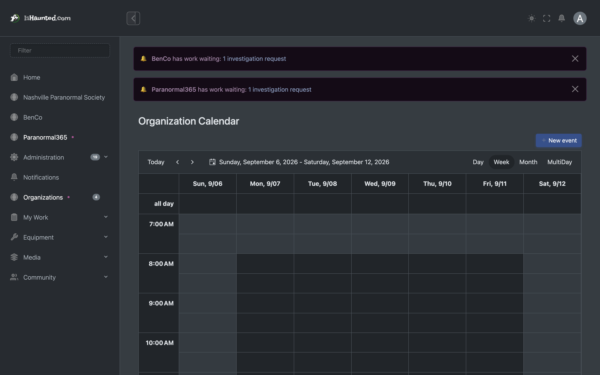
The calendar carries investigations and the group's own events.The group's Calendar holds meetings, training, anything with a time attached. Investigations are scheduled from the case they belong to, not here.
Where it happens. Type a free-text location, or pick one of the group's saved addresses. Prefer
the saved address: it is stored as a reference rather than copied text, so correcting the address
once corrects every event held there. A meeting link can sit alongside it — paste a Zoom, Teams
or Meet join link, and a bare zoom.us/j/123 is accepted as readily as the full URL.
Repeating events. The Repeats list covers the usual patterns — daily, weekly, monthly, and
so on. Custom takes an iCal rule directly (FREQ=WEEKLY;BYDAY=TU) for a pattern the list does
not cover.
Invites. A public event is open to the whole group by definition, so invites appear only on a non-public one. Tick members from the list, or type an email address to invite somebody outside the group. That lookup only finds addresses their owner has published and confirmed on their own profile — never the private address someone signs in with. If an address does not resolve, the person either has no account or has not published that address; ask them rather than guessing at another spelling.
Invites are invitations, nothing more. Assigning work belongs to investigations, where it already exists.
Under Settings, Calendar Event Types is the list the calendar's Type dropdown offers — Investigation, Meeting, Training, whatever the group actually does. A group with no types can still create events; the events simply have no type.
Each type carries a name, an optional colour and icon, and a sort order that decides where it sits in the dropdown. Only owners and administrators can change the list.
Clear Active to retire a type. It disappears from the dropdown for new events but stays on the events that already use it — which is almost always what you want. Deleting one removes it from those events too, leaving their date and title untouched.
Two lists, because a group deals with two kinds of gear.
The group's gear is equipment the group itself owns. Every member can see the list — what the group has is not a secret from the people who use it — but adding, editing and deleting it needs the Equipment permission, and so does seeing serial numbers.
Each piece tracks who is holding it, when it was last serviced, whether it is currently faulty, and its photos. Held by can be set by hand: kit gets passed over in a car park without anyone opening the app, and the record should still be able to tell the truth. A holder has to be an active member.
History on a piece opens two things: the full account of everything that has happened to it — loans, requests for more time, service and faults, newest first — and the service log itself, where new entries are added.
The service log part is what you write to. Anyone can read it; adding an entry needs the Equipment permission. The entry type does real work rather than just labelling the note:
| Entry | What it does to the item |
|---|---|
| Serviced | Moves its last-serviced date |
| Fault reported | Marks the piece faulty, and the note becomes the reason |
| Fault fixed | Clears the fault |
The entry and its consequence are saved together, so the log never disagrees with the piece it describes. Entries are kept — fixing a fault does not erase the report of it.
Once a piece has any loan or service history, deleting it is refused and you are asked to retire it instead — the button sits in the item editor. Retired gear drops out of borrowing, out of the public catalog and out of the group list, while everything that happened to it stays readable. You can put it back in service the same way. Destroying a serial-numbered asset would take the account of what happened to it along too.
Members' shared gear is the second list: equipment members own personally and have chosen to show this group. It is read-only here — it belongs to its owner — and it needs no permission to read, because the sharing itself is the owner's decision, not the group's to gate. Serial numbers stay with owners even here.
The Borrowing column says whether a piece can be borrowed at all, which is a separate choice from sharing it — a member can let the group know they own something without offering to lend it. Whether a particular piece is offered to the group or only lent personally is shown when you actually ask to borrow it, since that is the point at which the difference matters.
A shared piece disappears from this tab if its owner leaves the group. Their sharing choice is kept, so it comes back if they rejoin.
Under Roles, equipment has two entries, and the second sits underneath the first because it is narrower:
They are separate so a group can hand someone the loans desk without also handing them the catalog. Deciding what the group buys and owns, and lending out what it already has, are different jobs and often different people. Granting Equipment does not grant Equipment Checkouts.
Neither permission has any say over a member's personal gear. A loan of somebody's own equipment is always approved by its owner.
The group's file library: upload directly, or pull in a member's own file with Share from User. That button opens a picker listing everything the group could take a copy of — files their owners have shared with your group first, then public files — with search, a type filter, and thumbnail or list views. Choosing one copies it into the group's library; shared files arrive private by default, and someone with publish permission approves them before they ever appear publicly. The original stays the owner's: only a file's owner can delete it, and a group removing its copy never touches the member's own file.
The CMS editor has a built-in walkthrough — the ? button beside New Page runs it any time, and it runs itself once for first-time editors.
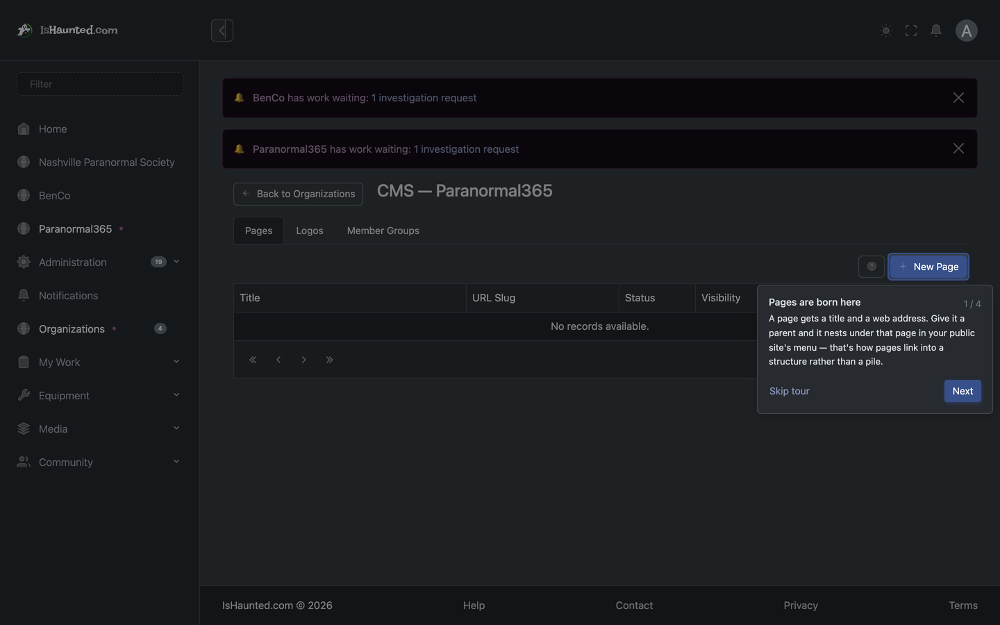
Your public pages. A page is not visible to anyone until you publish it.Pages you build under CMS appear on your group's public site. Two things control what visitors see, and they are different.
Published decides whether the page exists for visitors at all. Drafts decide whether the edits you are making right now are visible while you make them.
Editing a page that is not published changes it directly. Nobody can see it, so there is nothing to protect.
Editing a page that is published works differently. Open it and you will be offered Work on a draft instead. Take it, and your changes go into a copy — the live page carries on exactly as it was until you press Publish changes. Until then, visitors see the old version, and you can Discard draft to throw the work away and leave the live page untouched.
A page has one draft at a time. If a colleague has already started one, you will see a note saying so with a link to open it, rather than being handed a second copy nobody knows about.
Publishing keeps the page's address and its permissions — the live page is updated in place, not replaced, so nothing linking to it breaks.
A page's address is the last part of its web address — /o/your-group/about. Keep it short and
lowercase; it is what people paste to each other.
A few words are used by the site itself — cases and events today, plus some held back for things coming later. A page can't use one, because it could never be opened: the site would show its own page at that address instead. If you try, you'll be told which word and offered a way round it — "our-cases" rather than "cases".
If you have an older page marked Unreachable in the list, that is one made before this check existed. Rename it and it will start working.
An Image or banner section takes a picture from your group's files — Choose an image opens the picker with everything shared with the group; search it or filter by visibility. If the image you pick is members only, the editor says so on the spot: the page will render the picture for you and show visitors a broken frame, because a public page cannot hand out a file its owner kept private. Pick a public image, or make that one public on its file page first.
View as visitor on the editor opens the saved page exactly as the public renderer draws it, published or not. That is the honest check: the side-by-side panel next to the editor follows what you are typing, but it draws its own approximation in half a column, so a page can look right there and wrong in reality.
The preview also tells you if the page is not in the menu yet, which is the usual reason a freshly-published page seems to have vanished.
Built a write-up you want to do again? On the page's editing screen, Save as a layout keeps its sections — their types, titles and current wording — as a named layout, for example Investigation Results.
Next time you add a page, pick that layout under Start from one of our layouts and the new page arrives with those sections ready to fill in.
Two things worth knowing:
Sections that point at a case or an investigation keep the shape but you will want to re-point the pickers — a layout reused for a different night should show that night's work.
Two section types — Our investigations and Our cases — let you show your own work on a public page. Pick which records to show, and answer two questions about each section.
Where it happened. You can show the rough area, or nothing at all. There is no option to publish the exact address, whichever way you set it: the point shown on the map is the centre of an area several miles across and cannot be traced back to a building. That is deliberate — a case is somebody's home, and a link outlives the page it was on.
Who it was for. Cases can show the client's chosen name. Only the alias the client picked, or the one your group set for them — a real name is never published here. If neither is set, the case appears with no name.
Work that is not public yet is flagged in the picker, and adding it asks you to confirm. Until you do, those records are left off the page entirely. Publishing a private investigation makes it readable by anyone who visits, including the person it is about.
You can only show your own group's work. Everything is looked up fresh each time somebody views the page, so if a client later asks to be unnamed, they disappear from pages you published months ago — you do not have to remember which ones.
On any case page, the ? button beside Edit Case walks through exactly how a case goes public — the pseudonym, generalized addresses, and which media may appear.
Photos from a case shows pictures and files taken from one of your own cases. Choose the case, then tick the files you want.
Only some of a case's files can be published, and this is not a setting you can change here. A file appears in the picker when it is attached to a timeline entry marked Public, on a case that is itself public. Files on the case's Files tab never appear, whatever they are.
That is on purpose. There is exactly one way to publish a case file — put it on a public timeline entry — so there is one place to look when you want to know what is visible, and one place to change your mind. If a photo you want is missing from the picker, add it to a public timeline entry on the case first.
Captions are off unless you turn them on. A caption is the timeline entry's title, which is your group's own working description of what happened — useful to you, and sometimes more than you would choose to say to a visitor.
The photos stay linked to the case rather than copied onto the page. If somebody later makes that timeline entry private, or the case is unpublished, the photos come off every page that used them, by themselves. You do not have to remember which pages they were on. The same is true of the direct image links — a link copied out of the page stops working at the same moment.
An event on your calendar can be opened to anybody. Tick Public and it appears on your group's public site, on the site-wide What's on list, and anyone with an account can say they are coming.
This is the one part of the site that brings you people who have never heard of you. Somebody looking for a ghost walk near them finds your event, turns up, and meets the group — so the listing names you prominently and reads as an invitation rather than a record.
Events at landmarks, businesses, and your own addresses. Not events at a private residence, and not events attached to a case.
That is deliberate and cannot be overridden. A public listing is a date and an address advertised to strangers, and a client did not agree to have people turn up at their home. If you want to publicise work you are doing on a case, create a separate event for a venue that is yours to publish.
Hide exact location shows the town but not the street address. Whoever is coming sees the full address once they have said so; nobody else ever receives it, and the listing says as much up front so nobody feels tricked into signing up to find out where they are going.
If somebody cancels, the address stops being shown to them.
A public event gets a readable web address — /o/your-group/events/2026-08-24-ghost-walk — made
from its date and title the first time you publish it. That is the link to put on social media.
It does not change afterwards, even if you rename the event. A link somebody has already shared should keep working.
Somebody who finds your event and has never been here before doesn't have to sign up for anything first. They give an email address, we send them a link, and clicking it is what actually confirms they're coming.
The link matters: an address typed into a box proves nothing, and an event that hides its exact location until people are coming would be protecting nothing if anyone could type any address and be shown where you're meeting.
Confirming makes them an account with no password. They can set one later if they want to sign in properly, but they don't have to — it exists so you have somebody you can reach, and so they can see what they've said they're going to.
You'll see them in the attendee list like anybody else.
Anyone who has said they are coming is emailed a reminder about a day beforehand, automatically. You do not send it and there is nothing to switch on.
Somebody who signed up three weeks ago has had three weeks to forget, and a stranger who does not turn up is worse for you than one who never signed up at all — so the reminder repeats the time and place, carries the link to your event page, and gives them a way to say they can no longer come while you can still offer the place to somebody else.
It goes only to people whose answer was yes. Somebody invited who never replied, or who said maybe, is not written to: they did not agree to come, and a reminder about a thing you never agreed to is just mail you did not ask for.
Everyone is reminded once. If the site cannot reach somebody's address, it tries again on the next run rather than giving up quietly.
When Accepting Membership Applications is on (the group's Edit screen), your public page shows an apply box to signed-in visitors. Applications land on the Members tab, where any member with the requests permission can Accept or Deny — a denial asks for a reason, and the applicant sees your answer.
Every group is either an investigation group or a ghost walking tour, chosen when it was created and changeable in Settings. The choice decides what a NEW group starts with — a tour starts with a public, searchable meeting point and public events; an investigation group starts private — and after that it is a label, never a restriction. Nothing is withheld from either kind.
Alongside it sits runs public tours, which is a separate switch on purpose. Plenty of investigation groups run paid public tours as a sideline, and none of them should have to register a second group to be found for it. Turn it on and your group appears under Walking tours in the group finder while its badge still says investigation group — which is the truth about both facts at once.
Settings → Promote your group builds a promotional card that rotates through the group finder's Featured groups, the home page, and the public feed, always marked "Promoted". In the feed, cards are fed to the people nearest your group's public address first — a group with no public address still rotates, just unranked. Once approved, the page shows two honest numbers: how many times the card was shown, and how many people clicked through. The builder walks you through it — headline (say who you help and where), a short message (what you do, what it costs, what to do next), an optional picture from your media library, and where the card leads: your public page or the group finder. Send your people to the public page only once it's worth arriving at — a striking headline over an empty page loses the person you just won.
Every card goes through review before anyone sees it: submit, and a platform administrator approves it or declines it with a reason (you're messaged either way). Any later edit comes back through review — the approved text is the only text that ever shows. One card per group; withdraw it any time and it leaves the placements immediately.
When a member (or a client) renders a video from one of your cases in the video editor and posts it to the public feed, the post is credited to them — your group's name appears on nothing until you say so. Settings → Feed attribution lists that footage for your decision:
Either decision can be changed later. Footage from a private engagement additionally required the poster's explicit, recorded confirmation before it could be posted at all — claiming or declining is only about your name, never about whether the post exists.
Cameras and phones write the coordinates of wherever they were into the file itself. On a case at somebody's home, that file knows the address — and the site's careful, deliberately vague map pin counts for nothing if the photograph beside it carries the exact spot.
Photographs are cleaned for every group, always. The copy anyone downloads is rebuilt from the picture alone, so nothing that was not the image survives. There is no setting, because there is no reason anyone would want the alternative.
Audio and video are a setting, under Settings on your group's page. Cleaning a recording means rebuilding the file, so it is offered where a plan includes it — the switch says plainly when it is not available, and to whom to talk. Groups working only at landmarks and businesses may reasonably leave it off; a group going into people's homes should not.
Whatever is removed is still yours. Every file, of every kind, has its details recorded against its record when you upload it: where and when it was taken, the device, the technical figures. Removing that from the copy people download never removes it from your own records — you keep the facts, the public copy does not carry them. And a clip you cut from a recording keeps the recording's place, since a clip has no coordinates of its own.
Plans are priced by active members, per group — the price list is on the Pricing page, visible to everyone. Yearly billing usually costs less than paying month by month; the card says how much less.
Two things worth knowing about how plans behave:
What you signed up for is a contract for the period you paid for. If the plan changes after you subscribe, improvements reach you immediately — a raised limit, a lower price, nothing to do on your side. Changes that would reduce what you have wait until your renewal, and you'll get a message about them before your period ends, so nothing ever changes under you mid-period. When your current terms are better than what the pricing page shows, your Pricing page says so: "you keep the terms you signed up for until" your renewal date.
Plans can include limits — on open cases, equipment, loans out at a time, open investigations, public pages. If your group reaches one, the screen where you tried says exactly which limit and what your plan includes; closed cases and retired equipment never count against you. A larger plan raises the limit.
Have a coupon code? There's a line for it at checkout — type it and the price updates before you confirm anything. Codes can be limited to first subscriptions, to renewals, to yearly billing, or to a specific account, so if a code is refused the message says why.
If your group grows past what your plan covers, your plan does not change and nothing stops anyone joining. Each person who joins beyond your member count is billed for their own seat at a per-person price, told to them when they are accepted, and shown on their own Pricing page. Your group keeps one plan and one renewal date.
Tax appears as its own line on the quote when your state taxes the service, computed from your group's address — never folded into the price. And every payment your group makes has a receipt: open Billing history on your group's card on the Pricing page to see every charge, payment and adjustment, and download any receipt by its number. Receipts are generated from the payment record itself, so the one you download in five years says exactly what it said on the day.
Setting up a publication, writing posts, and deciding when the public sees them.
A publication is your group's own title — a place to write for people outside the group. Case write-ups, research, field notes, anything that deserves more room than the Feed gives it.
Readers do not need an account to read what you publish, and can subscribe to keep track of you.
Publications is a tab on your group's page. If you do not see it, either you do not have permission to edit the group's public material, or publications are switched off for the whole site — a site administrator controls that.
Permission is the same one that governs the group's CMS pages: whoever may speak for the group in public may write in a publication.
Not the place for a case's finding. A publication is for what your group wants to say — an article, a notice, a piece of research. What you concluded about a particular case belongs on that case, and is published by ticking Show this on our public case page on the report itself. See Showing your finding on your public page in Working a case. A publication post can of course link to it.
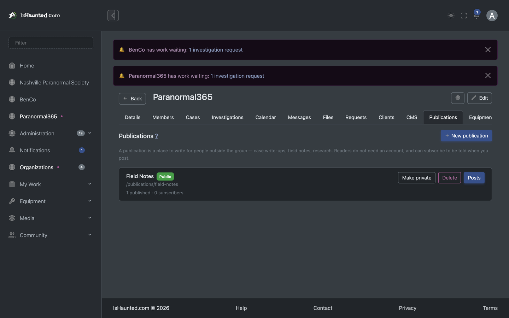
Each publication shows its address, how many posts are published, how many are still drafts, and how many people subscribe.New publication asks for three things.
Title — what the publication is called. Field Notes, The Ridgeway Case, Ashcroft Research.
Description — a line or two shown in the public directory, explaining what a reader will find.
Visible to the public — leave this off while you find your feet. Nothing you write is readable outside the group until both the publication is public and a post has been published. Two switches, deliberately: one lets you get a few pieces ready before anyone can see the publication exists at all.
The address — /publications/field-notes — is made from the title once, when you create the
publication, and never changes afterwards.
That is on purpose. Renaming later changes the heading readers see; it does not move the link. Any link somebody shared today still works next year. If the address really matters to you, get the title right the first time.
Posts on a publication opens everything in it, drafts included. New post opens the writing page, at the full width of the screen — a thousand-word piece written in a small box gets written badly.
Title — the heading, and the source of the post's own address, fixed on first save the same way the publication's is.
Excerpt — a line or two shown in listings. Worth writing rather than skipping: it is what a reader in the directory uses to decide whether to open the post.
Body — the piece itself, in the full editor.
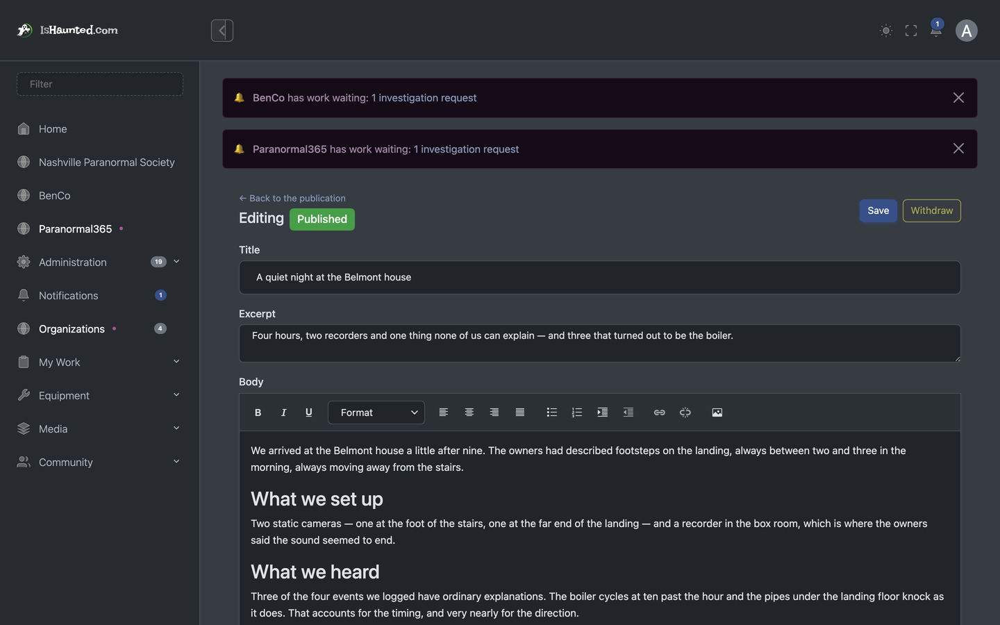
The writing page. Save leaves a draft a draft; Save & publish is the separate act.A new post is always a draft. Saving does not publish, whatever you had in mind when you hit the button. Nothing you write is in front of the public until you say so explicitly.
Save & publish saves what is on screen and then publishes it, in that order — so what readers get is what you were looking at, not the last version you happened to save.
Publish and Withdraw are also on the post list, if you would rather work from there.
Withdraw stops a post being served. It does not un-send it: anyone who has already read it still read it, and a link they shared now leads nowhere.
It is a way to take back something published in error. It is not a way to unpublish history.
Publishing again after withdrawing gives the post a new date. Keeping the original would drop it back into the middle of the list, where nobody looking at the top would notice it had returned.
The publications list shows how many people subscribe to each one. Subscribing needs an account — reading does not — so a subscriber is somebody you can actually reach.
Nobody can subscribe to a publication that is not public, even if they know its address.
You may see posts described as being for subscribers. Nothing on the site can be marked that way today: every post you publish is free to read in full, and there is no billing anywhere on the platform.
The groundwork is in place so that if paid publications ever arrive, they arrive without changing what you have already published.
Delete on a post removes it outright — it asks once first. Unlike a feed post, which is hidden rather than deleted so a moderation record survives, nothing points at a publication post but its own address. The group owns what it wrote.
Delete on the publication itself appears only while the publication is completely empty — nothing written, nobody subscribed. That is the case it is for: you created one, the title came out wrong, and the address does not move when you rename it.
Once there is anything in it the button is gone, and the reason is what deleting would cost. Removing a publication people have written in and subscribed to destroys the work and breaks every link anybody shared, which is not something to do by clicking twice. Delete the posts first if you genuinely want it gone — or ask a site administrator, who can remove any publication along with everything inside it.
One thing that surprises people: somebody who subscribed and then unsubscribed still counts. The rule is "nothing ever happened here", and somebody having read you is something happening. If Delete is missing on a publication that looks empty, that is usually why.
Sitewide settings, the clipart library, and the audit log.
Visible to app administrators only.
Administration → Dashboard is the overview the rest of this menu drills into: four headline numbers over a grid of charts, with a 7 / 30 / 90-day range picker.
The first three headline cards are links — People opens the user list, In a group the groups, Cases the case list — because the number is usually the start of a question the list answers. Signed in this week deliberately is not: there is no page listing recent sign-ins, and a card that sent you somewhere approximate would be worse than one that stays put.
The numbers worth knowing how to read:
There is no count of visitors who never sign in, and no "new versus returning" split. Nothing on this platform records anonymous visitors — a page view by someone with no account leaves no trace anywhere in the database. Answering that would mean adding visitor tracking, which is a decision about privacy and data retention rather than a chart, and it has not been made. Every number on this page is about accounts and what they did.
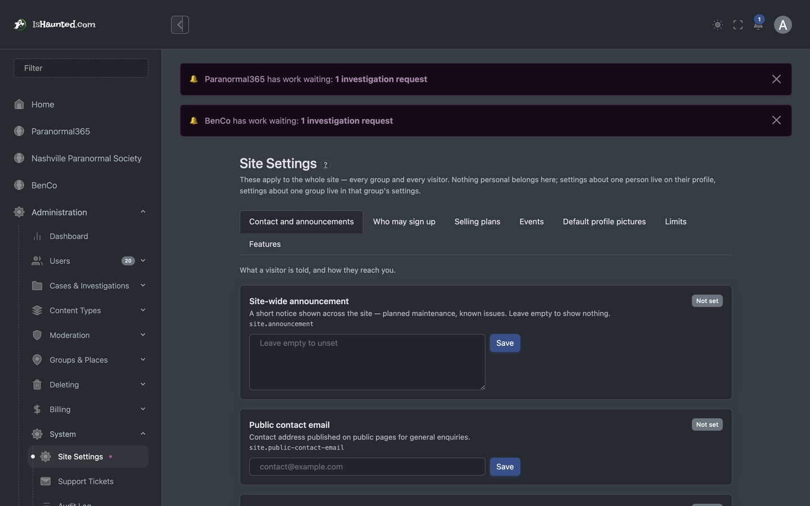
Site settings apply to every group and every visitor.Administration → Site Settings holds values that apply to the whole site. Nothing personal belongs here — settings about one person live on their profile, settings about one group live in that group's settings.
Adding a new setting is a code change, not a database one: settings are declared in
SiteSettingKeys.Seed, and the page renders whatever is declared.
Allow groups to self-register decides whether an ordinary signed-in visitor may found a group. Left on — the default, and how the site normally runs — anyone can start one from Organizations → Start a Group and becomes its owner. Switched off, that button disappears, the address behind it explains that new groups are not being accepted and points at the contact form, and the server refuses the request even if somebody has the address saved. You are exempt either way: an administrator can always create a group from this side of the site.
Reach for it when you want to pause growth — a billing change you are part-way through, or a period where each new group needs a conversation first. It has no effect on groups that already exist.
There are three default pictures: a generic one, one for members whose profile says they are a man, and one for members whose profile says they are a woman. Each is an ordinary upload: press Upload image, pick a JPEG, PNG, GIF or WebP, and it takes effect immediately — the preview under the row shows what is live. Uploading a replacement removes the previous image; there is nothing to clean up. The images are stored publicly on purpose, because they render for visitors who are not signed in.
Which one a viewer sees follows the person's own profile — the optional Sex field under their name (Male, Female, Unspecified; blank by default), self-declared and never guessed from a name. Blank or Unspecified gets the generic image; Male or Female gets their specific image when you have uploaded one, and the generic otherwise. A real photo always outranks every default.
Site-wide announcement is for maintenance windows and known issues. While it has text, an info banner shows it at the top of every page, to everyone — signed in or not — with your line breaks preserved. Clear the box and save to take the banner down; both the posting and the removal reach visitors within about half a minute, without a restart. It is shown exactly as typed: plain text, no formatting or links.
Near the bottom of Site Settings is a row of switches labelled Feature — …, one for each major section: the video editor, equipment, events and calendars, local discovery and maps, group public pages, the media library, group messaging, voting, and the two newer features below.
Where a switch is fully wired, it does exactly what it says. The links disappear from the navigation and the addresses stop working — someone who bookmarked the page, or who is handed a link by a colleague, gets the ordinary "page not found" screen rather than a way in. That pairing is the point: hiding a link while the page still answers is not switching a feature off.
Every switch is now fully wired. The last four were finished together: Local discovery and maps takes down the "what's near you" panel, the home-page maps and the nearby search; Group public pages takes down every /o/{group} page — including for visitors who are not signed in — along with the CMS editor and its tab; Voting removes the vote controls from cases, evidence and files and refuses the endpoints behind them; Events and calendars removes the Calendar tab, the public What's-on list, event pages, RSVPs, and the reminder emails, together — no more signing up for an event nobody will be reminded of.
What it does not do is delete anything. Equipment records, saved videos, messages and votes all stay exactly where they are, and turning the switch back on returns the section with its contents intact. Use it to take a section down while something is being fixed, or to run the site without a feature your groups do not want — not as a way to remove data.
Two things worth knowing:
A switch with nothing saved against it shows the setting's own default and is marked (default) beside On or Off — so the row always describes what the site is doing, not merely what has been typed into it. Until recently it showed the stored value alone, which meant seven running features reported themselves as switched off simply because nobody had ever touched them.
Two switches start off: Public feed and Publications. Both features are built, but neither is something a site should acquire by accident — each one adds a public surface that members and visitors will start using the moment it appears, so switching it on is a decision somebody makes deliberately rather than a default they inherit.
Administration → Users → the impersonate button signs you in as that person, and what you see is exactly what they see: their navigation and their groups under Home, their notification counts on the bell, their pages, their refusals. Your own Administration menu disappears while you look — it is your tool, not part of their experience. A banner at the foot of the sidebar says who you are viewing as, with Return to SuperAdmin beside it, and both now survive a page reload — leaving impersonation always takes exactly one click, however you got there.
Use it to see a reported problem through the reporter's eyes before assuming the cause. Actions you take while impersonating are real actions on their account.
There are three roles that apply across the whole site, separate from anyone's role inside a group:
Everyone else is an ordinary member. Creating an account and confirming an email address makes someone a verified member; it never puts them in a site role.
To give somebody a role, open Administration → Users, view the person, and open the Site Roles tab. Tick the roles they should hold and press Save Roles. What is ticked when you save is exactly what they end up with, so unticking a role removes it. The roles they hold also show as badges beside their name at the top of the page.
It takes effect the next time they sign in. Any session they already have open is ended within the hour, so a removed role cannot linger past that.
Two things the page refuses. You cannot remove your own SuperAdmin role — another SuperAdmin has to do that, and the box is locked to say so. And nobody can remove the last SuperAdmin on the site: make somebody else one first. Either would leave the site with nobody able to reach this screen.
Administration → Site Roles is the list of roles themselves. It can add a new role name and delete an empty one, and it shows how many people hold each. A role you add there is offered on the Site Roles tab straight away, but it grants nothing until the site's code checks for it by name — it is a label, not a permission.
Administration → Clipart Library curates the shared artwork every group can use in the video editor. Upload the file first, then choose it from your media library with the picker and publish. The format is read from the file itself — SVG, PNG, WebP, AVIF, GIF or Lottie — and anything else is refused rather than published as something the editor cannot draw.
Assets are retired, never deleted. Projects reference artwork by id, so removing one would break renders that already use it. A retired asset leaves the catalog and stays downloadable.
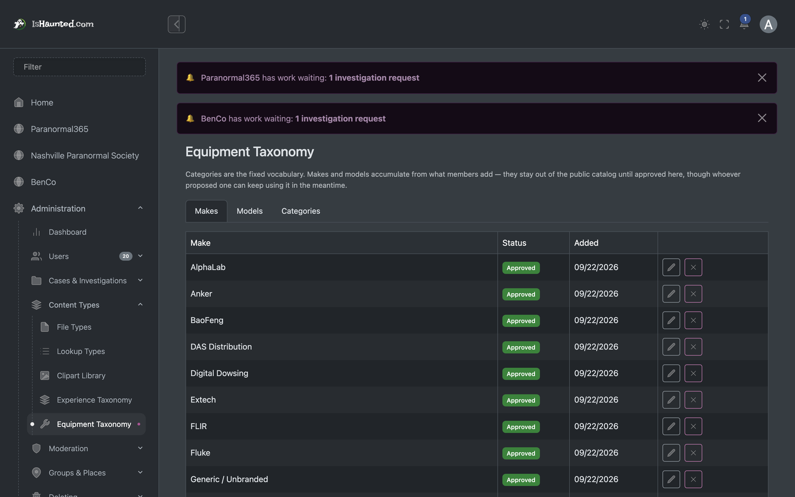
Makes and models members have proposed, waiting to be approved, merged or renamed.Two lists grow by proposal rather than by decree: the experience taxonomy and the equipment catalog. Groups add what they need on the night, and you confirm or clear up afterwards.
Confirming an entry marks it as reviewed. That matters beyond the badge: reviewed entries are the only ones offered as "did you mean" suggestions to the next person, and they stop being cleared away automatically. Confirming is how a word becomes shared vocabulary rather than one group's note.
Renaming does what it says — until the new name is already taken. Then you are shown the entry it collided with and offered a merge, because renaming onto an existing name means two things become one and somebody's records change meaning. That is too large to happen because a name was typed, so it is always a second, deliberate step.
Merging moves everything across and removes the duplicate. It cannot be undone. Two guards:
Deleting is only for an entry nothing uses. If it is tagged on something, you are told how many and refused — Reject is the action that removes a type together with its taggings, and it tells you how many it took with it.
Most tidying happens without you. An unconfirmed entry that a group proposed disappears on its own once the last thing using it is gone.
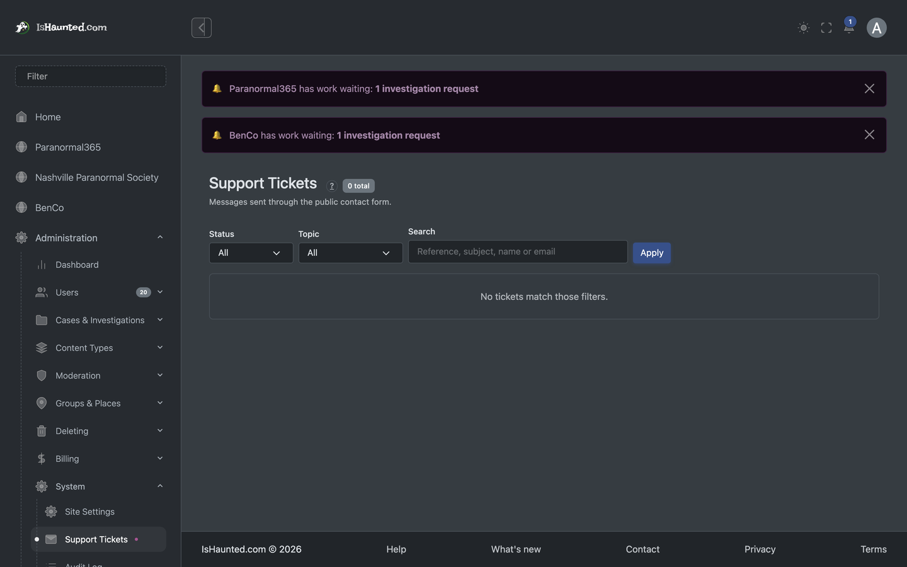
Every message sent through the contact form arrives here.Administration → Support Tickets is the queue for the public contact form. A ticket arrives as New; replying to the sender marks it Answered and assigns it to you if nobody had it.
The sender reads the thread through a private tracking link, whether or not they have an account — that is how a reply reaches someone who cannot sign in. Internal notes are never shown there. They are for staff talking among themselves, and adding one does not mark the ticket answered.
Contact details shown beside the form — postal address, phone, email, when we reply — are site settings, so they are corrected on the Site Settings page rather than in a deploy.
Which builds of the native helper are actually in use.
Administration → Sidecar Installs shows the optional native helper people install to make the video editor faster. The sidecar runs on someone's own machine and talks only to their browser, so these records are the only way to see which builds are in the wild — useful before changing anything about it, and the answer to "can we stop supporting that version yet?".
Three numbers and a chart:
The table below lists the individual events. Nothing here identifies a machine beyond the installation id the sidecar generates for itself.
Administration → System → Outgoing Mail answers one question: can this machine actually send email right now?
It matters because a failure here is invisible from everywhere else. Somebody signs up, no message arrives, and nothing on the site looks wrong — the account exists, the site is up, and the person simply cannot get in. That happened on this site, which is why the page exists.
The answer is different on every machine, so run it on the one you care about. The password is supplied to the running application as an environment variable on its application pool, not from a file in the repository. That means a developer's laptop, a shell on the server, and the website itself can each get a different answer, and only the website's answer is the one your members experience.
The page shows what the machine will send with — host, port, security, user, from-address — and whether a password is present. It never shows the password itself. Three states are worth knowing:
| What it says | What it means |
|---|---|
| Mail is switched off on this machine | No host is set, so nothing is even attempted. Every confirmation, invitation and reset is going nowhere silently. |
| A host is set but no password is present | The likeliest real fault, and the one that looks like nothing is wrong. Every visible setting can be correct and sending will still fail. |
| Settings listed, password present | Configured. Send a test to be sure. |
Send a test message does exactly that — a real send, not a connection check. The failures that matter happen after the connection opens: authentication rejected, sender not permitted, relay denied. None of them appear until a message is actually offered.
If it fails, the server's own words are shown verbatim rather than tidied into "could not send". That is deliberate: "535 authentication failed" and "connection timed out" need completely different fixes, and a polite summary tells you neither.
If it succeeds and the message still does not arrive, the mail left this server and the problem is delivery — spam filtering, or the recipient's provider rejecting it after accepting it.
Administration → Users has a Verified column, and it distinguishes three things that used to look identical:
That last row is the one worth scanning for. Before it existed, an unconfirmed account was just an empty box, and there was no way to tell somebody who had not bothered from somebody who was never given the chance.
The audit log records who changed what, and when. Filter it by entity, action, person or date.
Administration → Audit Log records every mutation with who made it. It is filtered and paged on the server, so date and user filters apply to the whole history rather than the page on screen.
The error log: how many rows, the oldest kept, the most repeated message — then the rows themselves, newest first.
Administration → Error Log is the other half of the pair, and the two are easily confused. The audit log records what people did on purpose and is kept for years. This one records what broke, and is pruned on a retention window — thirty days unless configured otherwise.
Open a row for the full message, the exception, and the request path. The path is usually the fastest way to place a fault, because it names the endpoint that was being called when it happened.
Read the cards before the rows. Most repeated message exists because of something this log did once already: it grew to 96% one repeated message, which made it useless for finding a real fault while looking perfectly healthy entry by entry. When one message accounts for half the log or more the page says so, because that domination is itself the finding — it will hide everything underneath it until it is dealt with.
What is not here. Only errors are recorded: the database sink is set to Error level, so warnings never arrive. That matters more than it sounds. A failure logged as a warning leaves no trace on this page at all, which is exactly how a broken confirmation email went unnoticed for hours. If something is clearly failing and nothing appears here, suspect the level before concluding there is no fault.
Nothing on this page deletes. Pruning belongs to the retention job, which has a minimum window and works in batches. There is deliberately no button that empties the log, because it would sit one click away from evidence somebody was about to need.
Administrators and SuperAdministrators can both open it. Diagnosing a fault is the job it exists for, and restricting it further would mean the person on call cannot see why the site is failing.
Each band carries a Role areas checklist — which parts of the site a group on that band may build custom role permissions for: Cases, Equipment, Public pages, and so on. Every band starts with everything checked, which changes nothing; unchecking an area is how bands become different products. Changes save as you click and apply to every group on the band.
The checklist is fully enforced. For a group whose band excludes an area: the role editor grays that area's section with a note naming the plan, the server refuses changes to it while carrying the stored grants forward untouched, and at runtime those grants simply stop answering — members lose the tabs the grants opened, owners and group administrators notice nothing. Nothing is ever deleted; a paused grant resumes exactly as configured the moment the area returns. The public Pricing page lists each band's included areas whenever any band excludes something.
Unchecking saves per click, so the group-facing notices are netted: a removal is queued (free-band groups hear after a short grace, paid groups ahead of their renewal), and re-checking the area before delivery cancels the pending notice — an accidental toggle reaches the groups as silence, not as two contradictory messages. Newly included areas are announced right away.
Beside the role areas sits a Capabilities checklist — plain may-or-may-not switches. Case transfers: a band without it can neither send a case to another group nor accept one transferred in, and both ends are enforced — a case can't be handed TO a group whose band lacks it either; declining never requires the capability. Audio/video location stripping: whether the group's media privacy setting may remove location data from audio and video files (photos are always cleaned; every file's metadata is always extracted and kept regardless). Private-residence cases: whether the group may take on client and residence work at all — accepting a client request, placing an investigation at a residence, receiving a private case, and publishing one are each checked; work a group already holds keeps working, and a client moving their own case is only ever limited by the destination's band. Existing cases are unaffected by unchecking; changes save per click and notify the affected groups through the same netted notices as the role areas, and the public Pricing page says plainly what a band leaves out.
Administration → Billing holds three screens.
Price Bands is the price list the public Pricing page renders — member ranges, a price per billing cadence, and the caps each band includes. Every save is validated as a whole list: the bands must cover every possible member count with no gaps or overlaps, and a save that would leave somebody unpriced is refused with the reason. Bands are retired, never deleted, because a band that has priced a period is part of the billing record. When an edit would affect groups already on the band, the save pauses and shows the blast radius first: improvements are announced to those groups immediately, reductions are queued and delivered up to two weeks before each group's own renewal — paid groups keep the terms they bought until then.
Editing one band at a time is right for an ordinary change and cannot express every legitimate one, because each save is judged on the list as it will be after that single edit. Splitting an unbounded top band is the case that shows it: bounding the top leaves the members above it unpriced, and adding the band above first overlaps the unbounded one below. Both orders are refused, so the shape you want is unreachable a band at a time.
Reshape the ladder edits every band on one form and is judged only on where it ends up. Add a band, remove one, move the boundaries, and save once. The rules are the same — start at one member, meet without gaps, and leave the last band with no upper limit — but they are checked against the finished ladder rather than each step, and a refusal changes nothing at all.
The list on that form is the ladder. A band you remove there is retired rather than deleted, for the same reason as everywhere else: a band that has priced a period is part of the billing record. Groups already on a retired band keep the terms they bought until their renewal.
There is no free band, and there should not be. A group is free by having no plan at all, not by holding one that costs nothing — a plan that costs nothing is still a plan, and every paid feature reads it as one. The editor says so if a band is ever priced at zero.
Coupons manages discount campaigns. A shared campaign is one code everybody types; a generated campaign is a batch of single-use codes you can print or mail, each withdrawable on its own, and addressable to a specific account. A campaign can be limited by date window, total redemptions (the budget), billing cadence, and occasion — first subscriptions only, or renewals only. A misconfigured campaign (one that takes nothing off, or whose window closes before it opens) wears a red Broken badge in the list rather than failing silently for whoever types it.
Every code also doubles as a referral link — the codes panel's Copy link button gives a
/pricing?code=… URL to hand to whoever is promoting or selling access. Visitors land with the
code attached and see it priced against their group before anything is confirmed; the code's
redemption count is the referrer's scorecard.
Subscriptions is where every group's standing lives — including groups never set up, which is the first thing to look for. Until a payment provider is wired in, this screen is the payment record: when a group pays, set their band, cadence and period here. The member count and price are frozen from the moment you save, and the group keeps those terms for the whole period whatever happens to the price list. The Members column shows the current count beside the frozen one — the gap is what the group will be re-banded on at renewal.
Administration → Groups → Merge Groups takes two organizations and ends with one. Choose the base — the group that survives, keeping its URL and settings — and the group to merge into it, then read the preview before anything happens: it lists exactly what will move and every collision, and computing it changes nothing.
What the merge does, in one pass that either completes or leaves both groups untouched:
The name after the merge is yours to choose — either group's name or a new one. Confirmation requires typing the merged group's name, because there is no undo.
Administration → Groups → Delete a Case, or the trash button on any row of Administration → Cases & Investigations → All Cases, which opens the same screen with that case already chosen.
This is the only place a case can be deleted anywhere on the site. Groups cannot do it — they close a case and keep it — so this page exists for the mistakes closing cannot cover: a duplicate, a test row, a case opened against the wrong group.
Read the preview first. It has two halves, and they are two different things happening.
Destroyed. Everything that exists only because the case does: its timeline, files, notes, messages, research, reports, investigations, contacts, votes, transfer records and any client access rows. Files the case took its own copy of are destroyed with it.
Kept, with the case reference removed. Anything that belongs to somebody else and merely mentions the case. In particular, field sessions survive — a recording belongs to the person who made it, so each one goes back to them as a personal session, with its files, readings and share links untouched. Feed posts, calendar events, video projects, evidence votes and public pages all stay and simply stop pointing at a case that is gone. The client's original request is kept too.
Two things you are warned about but not stopped by: the case has a client, whose record of work they asked for goes with it; and the case is public, so its page and any link to it stop working. Neither blocks the delete — being told is what matters.
Then type the case title exactly. The button does nothing until it matches, on the screen and on the server both.
Administration → Groups → Delete a Person, or the trash button on any row of Administration → Users, which opens the same screen with that account already chosen.
Read the preview before you agree to anything. It has two halves, and they are two different things happening.
Destroyed. Everything that is only ever theirs and that nobody else has a claim on: field sessions they recorded on their own rather than for an investigation, the files under those sessions, their memberships, sign-in history, messages received, follows, blocks, contact details and any external sign-in methods.
Kept, with their name removed. Anything they wrote for a group — case notes, timeline entries, group messages, evidence, and sessions recorded for an investigation. Those belong to the group and often to a paying client. One person leaving must not erase a group's record of its own work, so the records stay and are re-attributed to a former member.
The screen tells you which of the two it will be, before you press anything.
That distinction is not a technicality. If you are clearing out a test signup you want the first, and the screen will say so; if you are removing a real member of a real group you will get the second, and being told in advance is the point.
The screen warns you, without stopping you, when:
It refuses outright in one case only: the last SuperAdmin account. There is no way back from a platform nobody can administer.
Confirmation is the person's display name, typed exactly — the same as deleting a group, and for the same reason. There is no undo.
You cannot delete your own account from here; that is on your own profile.
Three more screens under Administration → Billing carry the actual money.
Ledger is the record: every charge, payment, adjustment and referral payout, newest first. It is append-only on purpose — there is no edit and no delete, here or in the API underneath. A wrong entry is answered by recording an adjustment that names the mistake, exactly the way a paper ledger works, so "who changed this number?" always has the same answer: nobody. Recording a charge computes tax from the group's state and freezes both the rate and the dollars on the row; recording a payment assigns the next receipt number, which the group can download — and re-download, forever — from their own billing history on the Pricing page. A payment carries no tax of its own: its tax was on the charge it settles, and counting it twice would be a lie in both directions.
Tax Rates holds the current rate per state, matched against the group's address. A state with no row is taxed at zero — the honest default, since many states do not tax this service, and a visible zero on a bill gets questioned while a silently guessed rate does not. Editing a rate never rewrites history: every document froze the rate it used.
A band covers a member count. When a group grows past it, the group's own plan does not change: each person who joins beyond the band is billed individually, at the per-extra-member price you set on that band's price row. The group keeps one contract at one renewal date; the extra people each hold a seat.
Set it up by putting a per-extra-member price on a band's price row in Price Bands. That also changes what the price list will accept: a top band is normally required to be unbounded, because a group must never outgrow the list — a band that prices extra members is allowed to be bounded, since growth past it is priced per seat rather than by a bigger band.
Member Seats is the worklist. A new member who takes a group past its band gets a seat marked Awaiting payment, and is told the price in their acceptance message. Joining is never blocked by a seat: they are a member from the moment they are accepted, and the seat is the billing record. When they pay, record the payment on the Ledger and set the seat Active with its period. The two are separate on purpose — the money and the entitlement can never disagree by being the same write.
Referrals shows every referrer's standing. A referrer is anyone a coupon campaign is attributed to — set on the campaign, by their account email — and every redemption of their codes counts as their referral, with the money frozen at redemption time. The screen shows what their codes brought in, the discount given, what they are owed, what has been paid, and the outstanding balance. Owed is a percent of what redeemers actually paid, set per campaign on the campaign itself — deals differ per referrer, so the percent does too. A campaign with no percent is not counted, and the owed figure wears a partial badge when that happens, so a low number never reads as a settled one. Recording a payout pre-fills the outstanding balance and lands on the ledger like everything else.
The reported-posts queue, and what hiding a post does.
Visible to app administrators only.
Administration → Content → Reported Posts is the queue of posts somebody has objected to.
A report is one person saying a post should not be here. It hides nothing. Neither does five reports, or fifty — there is no threshold, deliberately. An automatic one would remove whatever is least popular rather than whatever breaks the rules, and the people worst served by that are the ones with unusual things to say, which is most of this site's subject matter.
Hiding is your decision, and your name is recorded against it.
Each row shows the post as its readers saw it, who objected, and why.
Reports are listed oldest first. A queue worked newest-first leaves the oldest complaint unanswered for ever, and that is the one somebody is waiting on.
Each row shows the post as its readers saw it, who reported it and why, and — where more than one person reported the same post — how many. Treat that number as context, not as a verdict.
| Button | What happens |
|---|---|
| Hide the post | It disappears from every feed, thread, tag page and profile. |
| Leave it up | Nothing changes for readers. The report is marked as looked at. |
Both resolve every waiting report against that post together. Five people reporting one post is one decision, and leaving the rest waiting would put it back in front of a colleague with no sign it had already been dealt with.
Administration → Content → Feed Media is the other queue: photos and videos that have not been cleared for the feed. Nothing anybody uploads is shown to readers until it has been screened — automatically where the site's screening model is installed, and by a person here otherwise. The page says plainly which of those is the case.
A file the automatic screener held carries its reason ("blocked", or "borderline, needs a person") with a confidence score. Approve publishes it; Hold keeps it unpublished with your note. Neither deletes anything, and the author is only ever told their upload is being checked — never which check it tripped, because that would be a manual for dressing up the next one.
The page opens on the Waiting pile, which is only what nobody has looked at yet — under automatic screening that is usually empty. What the screener refused sits in the Held pile, and it is refused, not denied: nothing the screener says is final, and Approve there publishes it like anywhere else. Scary is fine. The screener knows one thing, which is nudity; a ghost, a dark hallway or a frightening frame is "normal" to it.
The one time an upload is refused outright rather than queued is an account that has used up the benefit of the doubt: three confident refusals in a day — a score the screener is sure about, not a borderline one — pause that account's photo and video uploads until the oldest of the three is a day old. Text posts still work. The poster is told their uploads are paused and nothing more.
Rows from such an account carry an Uploads paused badge, and one a step short of it says so too. Approving any one of the three lifts the pause at once, because the rule counts what was decided, not what the screener first said — so a run of real evidence the model misread is one Approve away from clearing. Borderline scores never count toward a pause at all.
Beside the safety question sits a different one: is this what it says it is? A post's category label (Apparition, Voices / Whispering…) is the author's claim, shown with the site's own match score. Is what it says and Category is wrong each record your judgment — that is all they do. A wrong category never hides a post; it nudges the author to fix the label and gently lowers the post's ranking.
Those judgments are worth the click even when nothing is wrong: every one becomes a labelled example the site's classifier learns from, and the classifier is only ever as good as the record of what people who looked actually decided.
A hidden post is still there. Nothing is destroyed: its replies, its reports and the record of who decided what all survive, so the next person asking "what happened here" can find out. Deleting it would take all of that with it.
Put it back on a hidden post undoes the hiding. It is the same act read the other way round.
Nothing, at present. There is no notification, and the post simply stops appearing. If telling people is something this site should do, it is a decision to make deliberately rather than a feature to add quietly — the wording matters more than the mechanism.
This page still works. Switching the feed off does not un-report anything, and a site that turns it off may still have complaints nobody got to. Every other feed page disappears with the feature; this one does not, so those reports are never stranded.